8. Realistic Rendering
All rendering algorithms compute images by simulating the physics of light, to a different degree of accuracy. We have already written a ray tracer, without deriving the algorithm from first principles. In this chapter, we introduce the foundational equations that govern the physics of light, and show how to solve them by writing a renderer that simulate a more comprehensive lighting model.
8.1. Real-World Illumination
A simplified view of real-world illumination is to think of light as photons that are constantly emitted by some surfaces, such as light bulbs or the sun. Photons then travels in straight lines, eventually hitting surfaces where they are either absorbed or reflected in some direction. The probabilities of absorption and reflection depend on the materials that surfaces are made of. After each reflection, the non-absorbed photons continue to travel again in straight lines till they hit another surface. Images are formed when photons hit an imaging surface, such as a digital sensor, a photographic film or the human eye. This phenomenon is show in Figure 8.1.
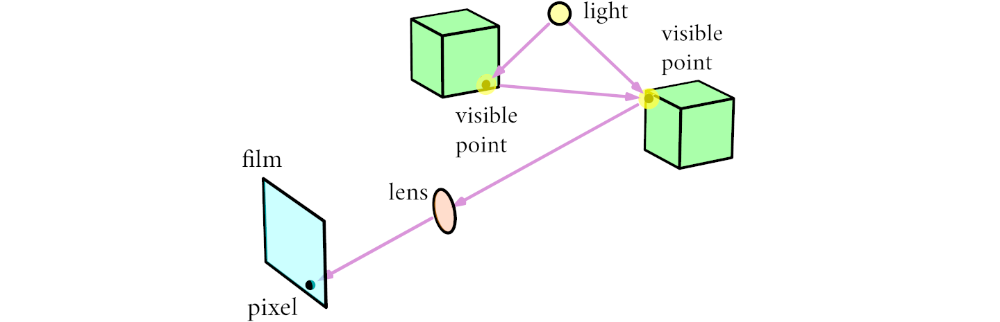
Figure 8.1. Illustration of real-world image formation. Photons leave light sources and bounce on objects surfaces, where they are either reflected or absorbed depending on the surface material. Eventually some photons will go through the camera lens and hit its sensor, where they are recorded to form an image.
The physics of light transport is described by the rendering equation. Rendering algorithms are numerical methods that, to one degree or another, approximately solve the rendering equation. Physically-based renderers attempt to solve the rendering equation as closely as possible. For brevity, in the reminder of this chapter, we focus on understanding how to solve the rendering equation numerically, rather than discussing the physics of light in details.
Physically-based renderers compute HDR images, where each pixel is the average radiance of the surface points that are visible through that pixel. Radiance measures the amount of illumination carried by a thin beam of light that reaches or leaves a small area on a surface, irrespective of the surface area and beam size. We compute radiance since it is the quantity that our eyes perceive, making it the chosen quantity for rendering algorithms. Radiance accounts for both emitting surfaces, such as light bulbs or LEDs, and surfaces that only reflect light, such as walls, cars, trees and humans.
8.2. Path Tracing
Some physically-based renderers simulate the light behavior quite literally, following "virtual photons" that start at light sources, bounce around the scene, and eventually hit a virtual sensor placed at the camera. These methods are slow since only a very small number of all emitted photons will eventually hit the camera. For this reason, practical rendering algorithms work in the opposite direction, beginning at the camera, and following the light paths in reversed order. Reversing light paths is physically sound, so these algorithms are sound too.
Path tracing is a family of algorithms that compute images by following light paths in reverse order. Path tracers differ in the manner with which they follow light paths. In this chapter, we introduce a simple path tracer that is helpful in understanding the basic concepts in realistic rendering.
In path tracers, images are computed a pixel at a time, as shown in Figure 8.2. For each pixel, we send rays from the sensor through the lens, and determine the first surface that is visible. At these points, we than gather illumination that reaches the point from both light sources as well as other objects. The sum of all gathered illumination, modulated by the surface material response, is the radiance we want to store in the image pixel.
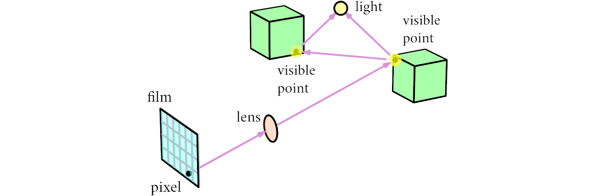
Figure 8.2. In path tracers, images are computed one pixel at time, by first determining the surface point that is visible from the pixel through the lens, and then gathering illumination at that point.
8.3. Integral Notation
All physically-based renderers boil down to compute integrals of illumination weighted by the surface material, so we have to get used to reading integral notation. In general, the problem we want to solve is to compute the integral \(I\) of a function \(f(\mathbf{x})\) of multiple variables \(\mathbf{x}\) defined over a multi-dimensional domain \(D\). We will write this integral with the following notation
In one dimension, the integral of a function is the area below a curve, but this intuition does not work as well as we increase the dimensionality of the domain. In two dimensions, an intuitive read of the previous equations is to think of an integral as accumulating the value of the function \(f(\mathbf{p})\), scaled by the area \(d A_\mathbf{p}\) of a small patch around each point \(\mathbf{p}\), accumulated over all points \(\mathbf{p}\) in the domain \(D\). This intuition works regardless of the shape and dimensionality of the domain. For example in three dimensions, we can think of the integral as accumulating the value of the function \(f(\mathbf{p})\), scaled by the volume \(d V_\mathbf{p}\) of a small box around each point \(\mathbf{p}\).
The most common integrals in rendering are integrals over all directions \(\mathbf{i}\) that surround a point \(\mathbf{p}\). These are used, for example, to compute the illumination that reaches a point from all directions. We can relate these integrals to integrals over the surface of the unit sphere, by observing that points on a sphere of radius one are equivalent to directions, that are normalized vectors of length one. To compute this integral, we consider the area of a small patch \(d \omega_\mathbf{i}\) of the sphere surface that surrounds the point corresponding to the direction \(\mathbf{i}\), and accumulate the value of the function over all directions \(\mathbf{i}\) on the whole sphere \(\Omega\). With this notation, we write integrals over directions as
The quantity \(d \omega_\mathbf{i}\) is called the differential solid angle, shown in Figure 8.3. The solid angle \(\omega\) is the area of the projection of an object onto a sphere of radius one, and is related to how large an object appears when seen from the sphere center. When we integrate over directions, we can think of the solid angle as a measure of the size of a thin cone centered at origin that extends in the direction \(\mathbf{i}\).
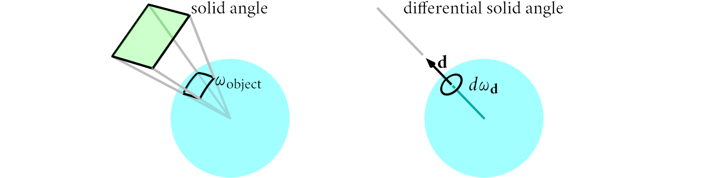
Figure 8.3. The differential solid angle \(d \omega_\mathbf{i}\) is the area of a small patch on a sphere of radius one that surrounds the direction \(\mathbf{i}\).
In the coming sections, we will often consider integrals of functions weighted by the cosine of the angle between the direction \(\mathbf{i}\) and the surface normal \(\mathbf{n}_\mathbf{p}\). To shorten the equation, we will sometimes write the projected differential solid angle \(d \omega^\perp_\mathbf{i}\) as
The previous integral over directions is a two-dimensional integral, since we integrate over the surface of the unit sphere, that we can compute by parameterizing the sphere explicitly and writing the integral over the surface parameters. If we use spherical coordinates, we can write the area of a small patch as \(d \omega_\mathbf{q} = \sin \theta d \theta d \phi\), where \(\theta\) is the angle with the \(z\) axis, and \(\phi\) is the angle in the \(xy\) plane. With this notation, we can write the integral explicitly as
If we consider spherical coordinates with respect to a frame aligned with the surface normal, we can use a similar change of variables to write explicitly integrals measured by the projected solid angle as
8.4. Radiance
The main quantity manipulated by photorealistic renderers is radiance, which measures the illumination that reaches or leaves a small surface patch carried by a thin beam of light. More formally, radiance is radiant energy per unit of time, solid angle and project area. Radiance is measured in units of watts per square meter per steradian (\(W m^{-2} sr^{-1}\)), where the steradian (\(sr\)) is the unit of solid angle.
Radiance, that we indicate as \(L\), depends on the position \(\mathbf{p}\) of the surface patch, the direction \(\mathbf{d}\) of the beam of light and the wavelength \(\lambda\) of light. We make a distinction between incoming radiance \(L_i\), that measures the illumination that reaches a surface patch, and outgoing radiance \(L_o\), that measures the illumination that leaves a surface patch. To understand radiance intuitively, we can say that the number of photons \(n_\text{photons}\) of a particular wavelength \(\lambda\) that reach or leave a small area along a thin beam of light per unit time \(t\) is proportional to the product of the beam radiance \(L\), the surface area \(dA_\mathbf{p}\), the beam solid angle \(d\omega_\mathbf{d}\), and the cosine between the surface normal \(\mathbf{n}_\mathbf{p}\) at \(\mathbf{p}\) and the beam direction \(\mathbf{d}\). The inclusion of the cosine is to account for the inclination of the beam of light with respect to the surface, as we saw in a previous chapter. This is illustrated in Figure 8.4, and can be written as
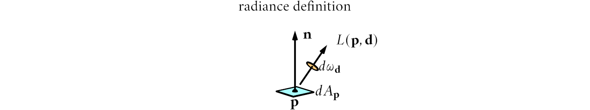
Figure 8.4. Radiance measures the number of photons that reach or leave a small area from a thin beam of light per unit time.
The dependence of wavelength comes the fact that light is emitted, absorbed and reflected differently depending on its wavelength. It is what gives color to objects. For example, a red surface reflects wavelengths close to red more than wavelengths close to blue, so it appears red. Some renderers model this dependence explicitly, and simulate the behavior of light for each wavelength independently. Most graphics renderers, however, simulate light behavior for only three wavelengths, corresponding to red, green and blue, for efficiency. We will follow this more common approach, and write radiance as a vector \(\mathbf{L}\) with three components, one for each color channel. For the reminder of this chapter, we will omit the wavelength dependence and use the notation \(\mathbf{L}_i(\mathbf{p},\mathbf{i})\) for the incoming radiance at a point \(\mathbf{p}\) from the direction \(\mathbf{i}\), and \(\mathbf{L}_o(\mathbf{p},\mathbf{o})\) for the outgoing radiance at a point \(\mathbf{p}\) in the direction \(\mathbf{o}\), where the directions \(\mathbf{i}\) and \(\mathbf{o}\) point away from the surface, as shown in Figure 8.5.
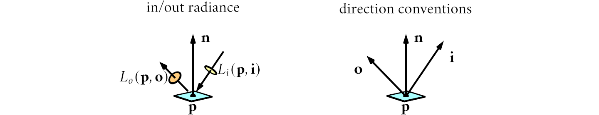
Figure 8.5. Incoming and outgoing radiance at a point \(\mathbf{p}\) in the directions \(\mathbf{i}\) and \(\mathbf{o}\), respectively (left). We use a convention where both directions point outward (right).
The most important property of radiance is that it is conserved along a ray in empty space. This is form of energy conservation, and is a consequence of the fact that photons are neither absorbed nor reflected in empty space. This relation is true only in an empty environment, and approximately true in air for short distances. This property is illustrated in Figure 8.6, and can be written as
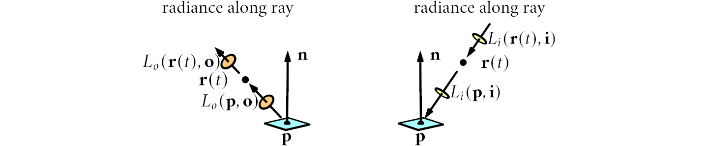
Figure 8.6. Radiance is conserved along a ray.
Radiance changes at surfaces, since photons are either absorbed or reflected. Since radiance is conserved along a ray, its value will change at the first intersection along that ray, if one exists, or when eventually hitting far away objects that we model as environment maps. Said more formally, the incoming radiance \(\mathbf{L}_i\) at a point \(\mathbf{p}\) in the direction \(\mathbf{i}\) is the same as the outgoing radiance \(\mathbf{L}_o\) at the intersection of a ray from \(\mathbf{p}\) to \(\mathbf{i}\), if the intersection occurs, or the environment radiance \(\mathbf{E}\) otherwise. This is illustrated in Figure 8.7, and can be written succinctly as
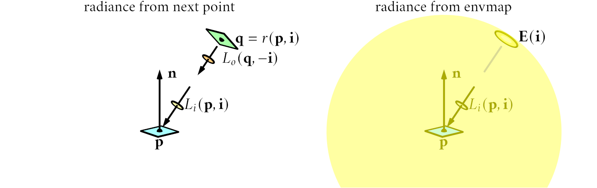
Figure 8.7. The incoming radiance at a point is either the outgoing radiance at the next intersection, if it exists, or the environment radiance.
8.5. Measuring Illumination
To compute final images, we estimate the incoming radiance that reaches each pixel as the average incoming radiance of points on the pixel area. In the case of pinhole cameras, light reaches a point \(\mathbf{q}\) on the sensor only from a single direction \(\mathbf{d}\) that connects the point \(\mathbf{q}\) with the lens center \(\mathbf{e}\), as shown in Figure 8.8. With this observation, we can write the incoming radiance at a pixel as
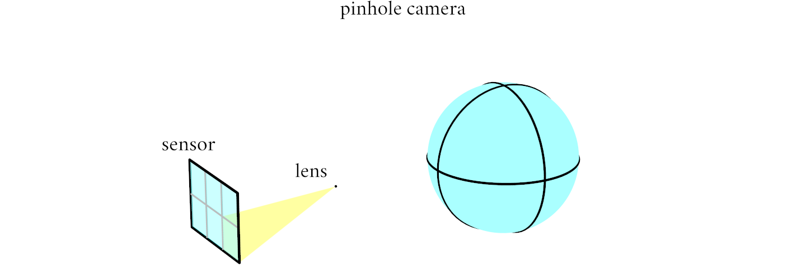
Figure 8.8. Average radiance of a pixel from a pinhole lens.
Real-world cameras have lenses with finite apertures, that we model approximately as circular disks. In this case, illumination comes to a point on the sensor from each point on the lens, as shown in Figure 8.9. To model these cameras precisely, we would have to model what happens inside the camera body, but this accuracy is not needed for most graphics applications. Instead, we model the inside of a camera as a black box and consider just the radiance average over both the pixel area and the lens, that can be written as
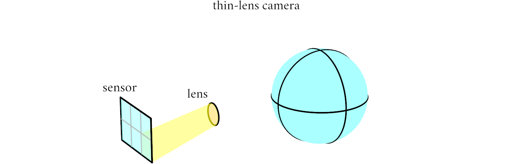
Figure 8.9. Average radiance of a pixel over a lens of finite aperture.
Since radiance is conserved along a ray, we can write the incoming radiance at the sensor as the outgoing radiance at the intersection of a ray that starts at the sensor and is directed towards the lens point, or the environment radiance, if no intersection occurs. Also, to avoid modeling the camera interior, we can consider the ray as starting at the lens point instead of the sensor point. Putting all this together, we can write the incoming radiance at a sensor point as
8.6. Rendering Equation
At a surface location, the outgoing radiance accounts for two effects. Photons may leave a surface because they are naturally emitted by it, or because they have been reflected from an incoming direction to the outgoing one. For this reason, the outgoing radiance \(\mathbf{L}_o\) is comprised of two terms, the emitted radiance \(\mathbf{L}_e\) and the reflected radiance \(\mathbf{L}_r\), shown in Figure 8.10, and can be written as
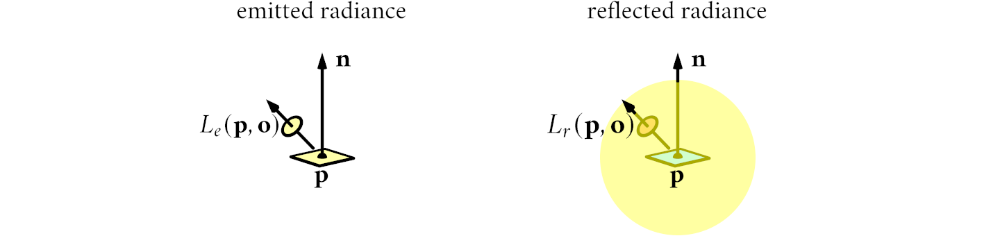
Figure 8.10. The outgoing radiance at a point is the sum of the emitted and the reflected radiance.
The emitted radiance \(\mathbf{L}_e\) is a property of the surface, and describes the behavior of surfaces such as light bulbs, neon signs, etc. It is a property of the scene description and in most renderers it is modeled as an additional term in the material.
The reflected radiance \(\mathbf{L}_r\), on the other hand, accounts for photons that bounce on the surface, and depends on the material the surface is made of. Surface materials are described by the bidirectional scattering distribution function \(f\), or BSDF in short. The best way to intuitively think about the BSDF is to observe that the likelihood \(\text{prob}_\text{bounce}\) that a photon of wavelength \(\lambda\) bounces from an incoming direction \(\mathbf{i}\) to an outgoing direction \(\mathbf{o}\) is proportional to the product of the BSDF \(f\) and the cosine of the incoming angle, written as
The BSDF \(f_\mathbf{p}\) is a function of the incoming \(\mathbf{i}\) and outgoing direction \(\mathbf{o}\), the wavelength of light \(\lambda\) and can vary from point to point on the surface \(\mathbf{p}\). In this book, we sometimes write explicitly the surface normal \(\mathbf{n}\) as a parameter of the BSDF, to emphasize that the BSDF is a function of the surface orientation. The formal definition of the BSDF is the ratio between the differential reflected radiance \(dL_r\) and the differential irradiance \(dE_i\), that is the incoming radiance \(L_i\) per unit of projected solid angle \(| \mathbf{n} \cdot \mathbf{i} | d\omega_\mathbf{i}\), written as
The BSDF has three main properties that comes from its physical definition. It is always positive, since it is a ratio of two positive quantities. It is reciprocal in the incoming and outgoing directions, a property known as Helmholtz reciprocity. And it conserves energy, a property that we can express by stating that the integral of the BSDF over all outgoing directions is less or equal to one. These three properties can be summarized as
Just like for radiance, the wavelength dependence comes from the behavior of light where photons are either absorbed ot reflected differently depending on their wavelengths. While some renderers model this dependence explicitly, we follow the common approximation of simulating light behavior for only three wavelengths for efficiency. For this reasons, we can write the BSDF as a vector \(\mathbf{f}\) with three components, one for each color channel, and omit the wavelength dependence.
The simplest BSDF we can consider is a constant BSDF, that describes a material that scatters light equally in all directions above a point and results in a surface with a matte appearance. Matte surfaces scatter light only in the upper hemisphere since the surface is opaque, and light cannot pass through it. The constant value of the BSDF is the color of the surface, scaled by the inverse of \(\pi\) to account for the fact that the integral of the BSDF over all directions is less or equal to one. If we indicate the color of the surface as \(\mathbf{k}_c\), we can write the matte BSDF as
From the definition of the BSDF, we can write the contribution of the illumination from an incoming beam of light to the differential reflected radiance as the product of the incoming radiance, the BSDF, the angle cosine, and the differential solid angle of the beam, shown in Figure 8.11, as
This formulation accounts only for illumination coming from a single direction. But illumination comes to a point from all directions that surround it. We can compute the total reflected radiance by integrating the contribution of all directions, as shown in Figure 8.11. Formally, we can write the reflected radiance as
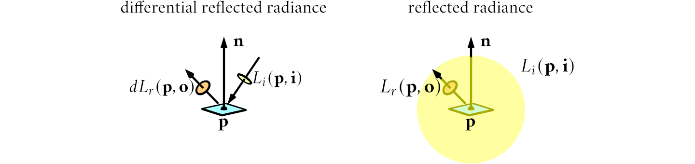
Figure 8.11. The reflected radiance is the product of the incoming radiance scaled and the projected BSDF.
If we combined to emitted radiance with the outgoing radiance, we obtain the rendering equation that relates the outgoing radiance at a point to the incoming radiance from all directions incident on that point, and can be written as
The previous equation relates two different quantities, the incoming and the outgoing radiance. To solve this equation, we need write the incoming radiance at a point in terms of the outgoing radiance from another. This is just what we have done for the camera rays. In this case, we can say that the incoming radiance at a point, is just the outgoing radiance of the intersection of a ray that starts at the point and is directed in the incoming direction.
The rendering equation can also be written in terms of the incoming radiance directly. Most path tracers are written in this manner since it is more convenient to compute the incoming radiance recursively. To avoid confusion, we will write it from the lens point of view as
8.7. Numerical Integration
All physically-based renderers boil down to compute integrals of radiance at the sensor locations and at each intersection point. These integrals cannot be computed analytically, since we cannot write a closed-form function that describes the radiance at each point in all but the most trivial cases. Instead we rely on numerical algorithms that approximately compute the given integrals.
The most common methods to evaluate integrals numerically belong to the class of quadrature rules. The simplest of these methods splits the domain in regular grids of small, fixed-size, volumes. The integral is approximated as the sum of the function, evaluated at the center of each grid cell, multiplied by the cell volume. In one dimension, this is equivalent to approximating the area below the function with rectangles of equal width, as shown in Figure 8.12. For this one-dimensional case, we can compute the integral estimate with \(n\) samples as
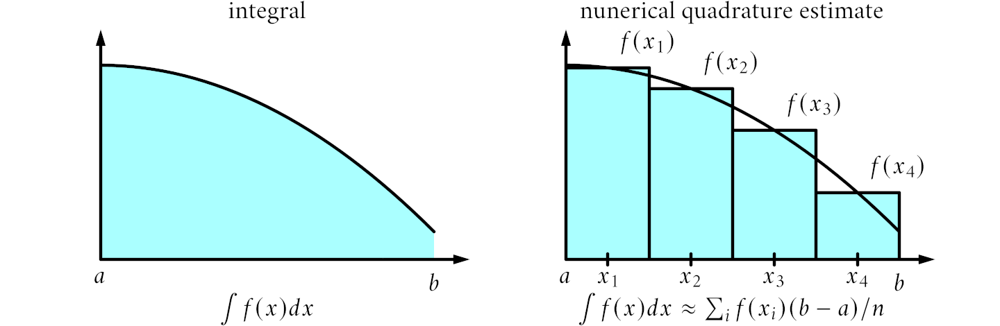
Figure 8.12. Integral of a function computed with numerical quadrature.
This method works well for functions of low dimensional variables. In higher dimensions though, numerical quadrature becomes problematic since these methods require splitting the domain in each dimension separately, leading to a number of function evaluations that grows as a power of the number of dimensions. To show this, let us write an estimate of an integral of a function of \(d\) dimensions defined in the hypercube \([\mathbf{a},\mathbf{b}]\) as
As shown before, the number of evaluations grows exponentially with the number of dimensions. This is what's called the curse of dimensionality. For problems in rendering, this is prohibitive since we work on integrals of many dimensions at once.
Monte Carlo integration methods are randomized algorithms that approximate the integral by averaging the values of the function, evaluated at randomly-selected locations, multiplied by the domain size. For a function of one variable, shown in Figure 8.13, we can write an estimate of the integral as
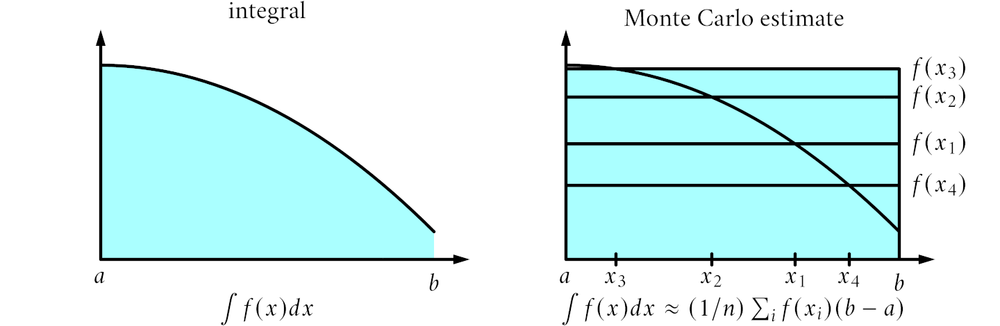
Figure 8.13. Integral of a function computed with Monte Carlo integration.
Initially this algorithm may sound quite counterintuitive. One way to get some intuition into what Monte Carlo integration does is to interpret the above equation as the average of many different estimation of the integral. Each estimation approximates the integral with a rectangle that has as width the domain size, and as height the function evaluated at a random location. Each estimation is certainly quite rough. But when we average these estimates over a large number of trials, we get a good estimate of the overall integral.
One important aspect to consider is that Monte Carlo methods are stochastic, in that every time we compute the integral we obtain a different estimate, since the function is evaluated at different random locations each time. Monte Carlo methods find their justification in the law of large numbers that ensures that as the number of samples goes the infinity, the probability that the exact integral value is computed goes to one. Note that we explicitly state that the probability goes to one, not that the value is computed correctly. This comes from the fact that locations are chosen randomly so it is possible that the integral is computed wrongly even with many evaluations. The best we can say is that it is very unlikely, just like tossing a dice many times and always getting the same number.
Monte Carlo methods generalize well to multiple dimensions and to choosing samples with different probability in different regions of the domain. In fact, for a function of \(d\) dimensions integrated over a hypercube \([\mathbf{a},\mathbf{b}]\) of volume \(V\), we can write the Monte Carlo estimate as
The above equation can be generalized for domains of any shape. For example, we can use it to integrate functions over a disk, such as the lens, or the surface of a sphere, for gathering illumination, both of which are 2D domains but with different shapes.
Since Monte Carlo integration is a randomized process, different estimates are computed each time we run the algorithm. These estimates oscillates around the true value in a manner that appears as noise. The magnitude of the oscillations between all estimates is related to the estimation error in Monte Carlo methods. The error is inversely proportional to the square root of the number of samples and does not depend on the dimensionality or shape of the domain. In this sense, Monte Carlo methods do not suffer from the curse of dimensionality, being equally good in all dimensions. At the same time, Monte Carlo methods converge slowly since to reduce the error by a half, we have to increase the samples four times. We can write the relative error in Monte Carlo estimation as
In the next section, we will derive the Monte Carlo method for computing integrals of functions over \(d\) dimensional domains of any shape and where the samples can be chosen with different probability in different regions of the domain. Before continuing though, it is helpful to show some examples of Monte Carlo integration.
As a first example, we will integrate the function used to draw the previous figures, which is an upside-down parabola. We chose a simple polynomial so that we can computed the integral analytically and compare it to the Monte Carlo estimates. Here is integral that we want to compute and its analytic value:
To evaluate this integral we need a source of random numbers. For practical purposes, most Monte Carlo implementation use a pseudo-random number generator, rather than a true source of randomness. This is not only common, but advisable in practice since we can reproduce the same sequence of random numbers when needed. There are a plethora of pseudo-random random number generators available, with the PCG random number generator often used in rendering. All random number generators can generate random numbers \(\xi \in [0,1)\). The estimate of the integral is then computed as
To visualize how Monte Carlo integration works, we plot the integral estimate by running the Monte Carlo algorithm many times but for a fixed number of samples each time in Figure 8.14. Note how the estimated integral changes each time we compute it due to randomization.
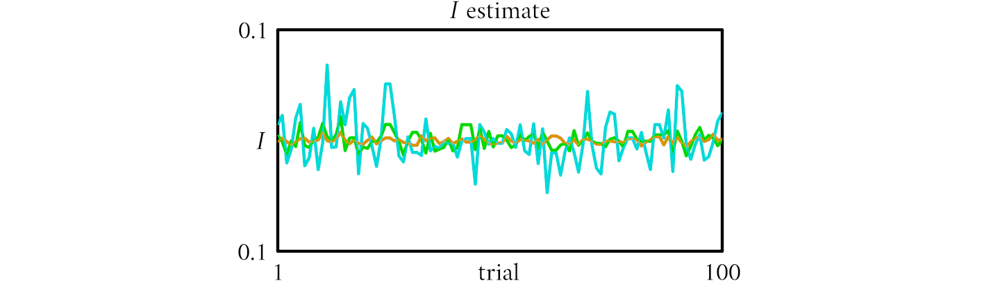
Figure 8.14. Plot of the estimated values for the integral \(I\) in different trials with \(10^2\) samples (blue), \(10^3\) samples (green), and \(10^4\) samples (orange). Note how the estimate values fluctuate around the true value, and how the fluctuation decreases as we increase the number of samples.
We visualize the change in error by plotting just the integral estimate executed once but with an increasing number of samples in Figure 8.15. Note here how the oscillation remain within a band bound by the inverse of the square root of the number of samples.
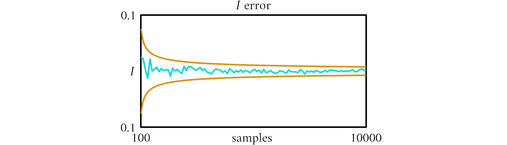
Figure 8.15. Error in the estimation of the integral \(I\) versus the number of samples. Note how the estimate values (blue) fluctuate within the error bounds of one over the square root of samples (orange).
The classic example of Monte Carlo integration is the numerical computation of \(\pi\). In the 2D plane, we define a function that is one when a point is inside a circle of radius one, and zero when outside. The integral of this function is the area of the unit circle, which by definition is \(\pi\). We can write this integral as
To estimate this integral with Monte Carlo, we need to generate random points \(\mathbf{x} \in [-1,1]^2\) from random numbers \(\xi \in [0,1)\). To generate random values \(\boldsymbol{\xi}\) in \(d\) dimensions, we can simply generate \(d\) independent random numbers \(\xi_i\), one for each dimension. To obtain values in the \([-1,1]\) domain, we transform the random values generated by our random number generator. This is an example of a very common operation in rendering algorithms, sometimes called warping, where we transform a sample from a domain to another. In this case, we simply scale by two and shift by one each random number. With this transformation, we can write the Monte Carlo estimate of the integral, shown in Figure 8.16, as
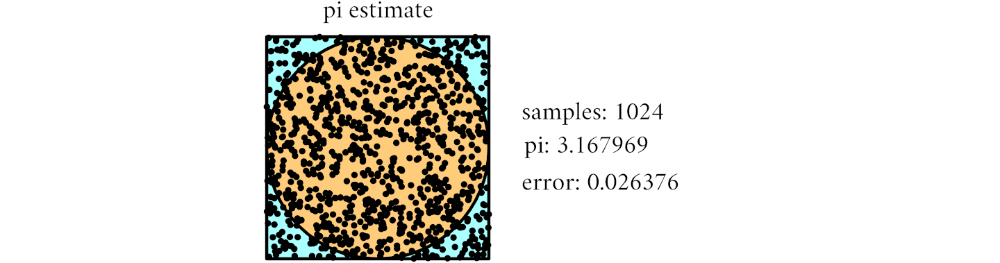
Figure 8.16. Estimate of \(\pi\) obtained with Monte Carlo integration. We define a function \(f\) that is one when a point is inside a circle of radius one (orange), and zero when outside (blue). The integral of this function is by definition \(\pi\), that we can estimate using Monte Carlo by generating random points (shown above) and checking whether they are in the circle or not.
Once again, we can plot the estimate of the integral for a fixed number of samples in Figure 8.17 and the change in error with respect to the number of samples in Figure 8.18. Note how the error decreases as the inverse of the square root of the number of samples, and how the estimate values fluctuates around the true value, just like the one-dimensional integral seen before.
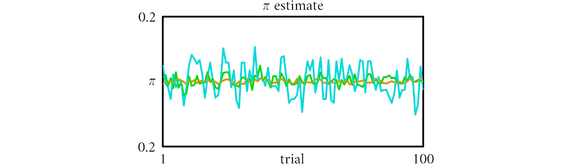
Figure 8.17. Plot of the estimated values for \(\pi\) in different trials with \(10^3\) samples (blue), \(10^4\) samples (green), and \(10^5\) samples (orange). Note how the estimate values fluctuate around the true value, and how the fluctuation decreases as we increase the number of samples.
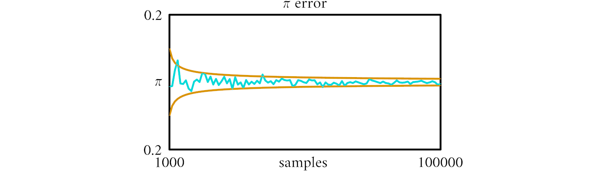
Figure 8.18. Error in the estimation of \(\pi\) versus the number of samples. Note how the estimate values (blue) fluctuate within the error bounds of one over the square root of samples (orange).
8.8. Random Variables
In the previous section, we showed how to compute integrals using the Monte Carlo method. In the next two sections, we will derive the Monte Carlo method for integrating functions over multi-dimensional domains of any shape and where the samples can be chosen with different probability in different regions of the domain.
We start by introducing the concept of random variables, that we will present in a very succinct manner. A random variable is the value that results from a random process, like a coin toss or a random number generator. You can think of it as a random value drawn from a specific distribution.
A continuous random variable \(\mathbf{x}\) is a random variable that can take any value in a continuos domain \(D\). The domain \(D\) may be of any dimension and shape. For example, we can define random variables for points in a cube or on the surface of a sphere. The behavior of the random variable is described by its probability density function \(p(\mathbf{x})\), PDF for short, that is proportional to the probability \(d\text{Pr}(\mathbf{x}) = p(\mathbf{x})dA_\mathbf{x}\) that the random variable takes a value in a small patch around \(\mathbf{x}\) of size \(dA_\mathbf{x}\). We write a random variable \(\mathbf{x}\) with probability density function \(p\) as
From the previous equation, we can conclude that the probability that the random variable takes a value in a given sub-domain is the integral of the probability density function over that sub-domain as \(\text{Pr}(\mathbf{x} \in C \subseteq D) = \int_{\mathbf{x} \in C} p(\mathbf{x}) dA_\mathbf{x}\). The PDF integrates to one over the domain of random variable since the probability that the variable is in its own domain is one. More formally, we can write this as
A discrete random variable is a random variable whose domain \(D\) is a finite set of values \(\{\mathbf{v}_1,...,\mathbf{v}_m\}\). The behavior of the random variable is described by its probability mass function \(P(\mathbf{x})\), PMF for short, that returns the probability \(P_i\) that the random variable \(\mathbf{x}\) takes each value \(\mathbf{v}_i\) in the domain. We can write a discrete random variable \(\mathbf{x}\) with probability mass function \(P\) in manner similar to the continuous case as
In the discrete case, the probability mass function is normalized to one over the set of possible variable values as
Let us consider the application of a function \(f\) to a random variable \(\mathbf{x}\) of PDF \(p\). This is itself a random variable \(y = f(\mathbf{x})\). The expected value of a random variable is the average value of the variable weighted by a probability distribution. The expected value is a property of the distribution, not of single random values. Intuitively, it tells us the "center" of the distribution. For function of random variables, the expected value is written as the integral of the product of the function and the PDF as
The variance of a random variable is the expected value of the square of the difference between the variable and its expected value. It is the squared measure of how much the variable deviates from its expected value. The variance is written as
From the previous definitions, we can derive a few properties of the expected value and variance of random variables. If we write as \(\{\mathbf{x}_1,...,\mathbf{x}_n\}\) a set of \(n\) random variables drawn independently with PDF \(p\), and with \(s\) a scalar, we can write
8.9. Monte Carlo Integration
Let us now consider the original problem of computing integrals of functions. In particular, we will consider the integral of a function \(f\) over a multi-dimensional domain \(D\), that is written as
The Monte Carlo estimate of this integral is computed by considering a set of \(n\) samples \(\{\mathbf{x}_1,...,\mathbf{x}_n\}\), each drawn independently with PDF \(p\), and taking the average of the function \(f/p\) over these samples, provided that the PDF is non zero for all points where the function is non zero. Written succinctly we can write
More formally, the sample mean is itself a random variable. From the properties of expected values we can easily show that the expected value of the sample mean is the integral of the function as
In a similar manner, we can show that the variance of the sample mean is the variance of the function divided by the number of samples as
These results gives us statistical guarantees on the accuracy of the Monte Carlo estimate of the integral. These are further strengthened by the strong law of large numbers, that ensures that as the number of samples goes the infinity, the probability that sample average is equal to the expected value goes to one, regardless of the the variance of the function. This law can be written as
Intuitive this means that can estimate the integral of a function by taking \(n\) random samples for a probability distribution \(p\) and computing the average of the function over these samples. Since this estimate is itself a random variable, it will fluctuate around the true value of the integral each time we compute it. The magnitude of the oscillations between all estimates is estimate the square root of the variance of the sample mean that is proportional to the inverse of the square root of the number of samples, written as \(\sigma \propto 1 / \sqrt{n}\).
Compared to numerical quadrature, Monte Carlo methods have several benefits. Its error scales well to high-dimensional domains since it is independent of the number of dimensions. It is robust to discontinuities in the integrand function. It is trivial to implement, since it only requires us to to be able to generate points randomly in the domain of interest, where we have closed formulas for all integrals in rendering, and to evaluate the function at those points. For all these reasons, Monte Carlo methods are the methods of choice for computing integrals in rendering.
One of the main challenges in Monte Carlo integration is to choose a good probability distribution \(p\) to sample from. The ideal distribution would be the one that matches the integrand function, since this would reduce the variance of the sample mean to zero. But this is not possible in general. Instead, we can choose a distribution that is approximately proportional to the integrand function, thus reducing the variance of the sample mean significantly. In the context of Monte Carlo integration, this technique is called importance sampling. We will show several examples of this in the next sections.
Multiple importance sampling, MIS for short, is a generalization of importance sampling that allows us to further reduce the variance of the sample mean by combining multiple probability distributions. The basic idea of MIS is to use a weighted average of multiple Monte Carlo estimates, each computed with a different probability distribution. The weights are chosen so that the variance of the resulting estimator is minimized, and can depend on the samples themselves. If we have \(m\) probability distributions \(p_i\), with which we pick \(n_i\) samples \(\{ \mathbf{x}_{i,s} \}\), we can write the MIS estimator as
This formulation approximates the integral when the weights are zero if and only if the PDFs are zero, i.e. \(w_i(\mathbf{x}) = 0\) when \(p_i(\mathbf{x}) = 0\), and when the weights of each sample sum to one, i.e. \(\sum\nolimits_i w_i(\mathbf{x}) = 1\). We can easily demonstrate that the previous estimator works by substitution, as
The weights \(w_i\) that optimally reduce variance are given by the balance heuristic, where the weights are written as
We can easily show that the balance heuristic is equivalent to importance sampling with a new distribution. If we write as \(n\) the total number of samples \(n = \sum_i n_i\) and as \(r_i\) that ratio of samples \(r_i = n_i / n\) for PDF \(p_i\), we can write the balance heuristic as
This means that MIS, with the balance heuristic, gives us a way to combine multiple Monte Carlo estimates that is equivalent to importance sampling with a PDF that is the weighted average of the original PDFs. We can choose the ratios of samples \(r_i\) to control the relative importance of each PDF. A commonly used variation of this formulation is to draw a sample randomly between the distributions. For example, for two distributions \(p_1\) and \(p_2\), we choose which distribution to sample by picking a random number \(\xi \in [0,1)\) and sample from \(p_1\) if \(\xi < P_s\) where \(P_s\) is the probability of choosing \(p_1\). Otherwise, for \(\xi \geq P_s\), we sample from \(p_2\). We will use this form in the next sections.
We can further improve the efficiency of Monte Carlo integration by reducing the cost of evaluating the estimator itself. The basic idea is to skip the evaluation of the function for samples that are known to have little contribution to the final integral. If we do this stochastically, we can ensure that the resulting Monte Carlo estimate converges to the correct value as before. In the context of Monte Carlo integration, this technique is called Russian roulette.
The idea behind Russian roulette is to decide at each sample whether to evaluate the function randomly. We do this by picking a probability \(p_r\) that controls the chance of evaluating the function. At each sample, we pick a random number \(\xi \in [0,1)\) and evaluate the function if \(\xi < P_r\). If \(\xi > P_r\), we skip the evaluation. If apply this procedure directly, the resulting estimator will always be smaller than the original one, since same samples are missing in the average. We can correct for this by rescaling the computed samples by one over the probability \(P_r\) that we evaluate the function. We can show that this procedure is correct by showing that the expected value of the function \(f_r\) that includes Russian roulette, that is itself a random variable, is the same as the original function \(f\). We can write this short proof by substitution as
We will use Russian roulette in the coming sections. In particular, we will use it to reduce the number of bounces in the simulate light path when computing the over illumination that reaches a point.
8.10. Generating Samples
As we have discussed before, the main requirement for using Monte Carlo methods is the ability to generate samples in the integration domain distributed with desired probabilities. Most random number generators output canonical random values \(\xi \in [0,1)\) distributed uniformly, meaning with equal probability, in the unit domain. By using multiple random numbers drawn independently, one for each dimension, we can generate canonical random values \(\boldsymbol{\xi} \in [0,1)^d\) in the unit \(d\)-dimensional domain, as shown in Figure 8.19. The PDF is these values is just one, \(p_\text{canonical}(\boldsymbol{\xi})= 1\).
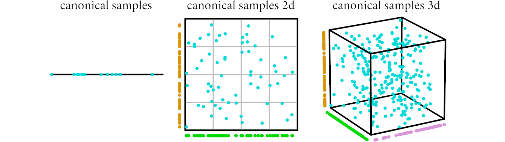
Figure 8.19. We generate random values in multiple dimensions by using independent random numbers for each dimension.
We can use these random points to generate samples with desired PDFs, by applying a transformation to the random points. Modern renderers use several of these transformations, which form the base for the practical use of Monte Carlo methods. In this section, we will review how to construct transformations and then give a collection of formulas to be used in the next sections.
Transformation functions, called warps in realistic rendering, are invertible functions from two domains of the same dimensionality, but with possibly-different shapes. To derive transformation functions, we first need to understand how PDFs transform. If we consider a random variable \(\mathbf{x}\) with PDF \(p_\mathbf{x}\) and a transformation function \(\mathbf{w}(\mathbf{x})\) with Jacobian matrix \(J_\mathbf{w}(\mathbf{x})\), we can write the PDF of the transformed variable \(\mathbf{y} = \mathbf{w}(\mathbf{x})\) as
We will not derive formally the previous equation, but we can get some intuition on how it works by considering that a bijection between two domains of the same dimensionality maps a small patch of the first domain to a small patch of the second domain without changing the probability that a point is in those domains. This implies that \(p_\mathbf{x}(\mathbf{x}) dA_\mathbf{x} = p_\mathbf{y}(\mathbf{y}) dA_\mathbf{y}\). From the rules on change of variables in integrals, we can write the change in areas as \(dA_\mathbf{x} = \left| \text{det}(J_\mathbf{w}(\mathbf{x})) \right| dA_\mathbf{y}\), that proves by substitution the above formula.
Now that we know how PDFs transform, we have to find a method to construct transformations to obtain the desired PDFs. In one dimension, this problem has an elegant solution called the inversion method, shown in Figure 8.20. The transformation function \(w\) from a canonical random variable \(\xi\) to a random variable \(x\) with desired PDF \(p_x\) is the inverse of the cumulative distribution function \(c_x\), CDF for short, that is the integral of the PDF. We can write the transformation as
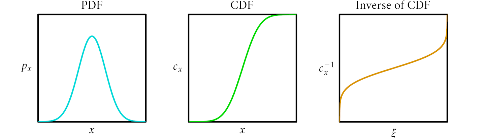
Figure 8.20. In one dimension, we can generate samples with a given PDF by computing its CDF and then inverting it.
To derive the transformation above, we start by writing the PDF \(p_y\) of the transformed variable \(x = w(\xi)\) as \(p_x(x) = p_\xi(\xi) \left| dw/d\xi \right|^{-1}\). We can simplify this equation by observing that since \(\xi\) is a canonical random variable, its PDF is just one, so \(p_\xi(\xi) = 1\). Also, we can apply the inversion rule for derivatives to write \(\left| dw/d\xi \right|^{-1} = \left| dw^{-1}/dx \right|\). By substitution, we have \(p_x(x) = \left| dw^{-1}/dx \right|\). If we integrate both side, we obtain that \(w^{-1}(x) = \int_{-\infty}^x p_x(x')dx'\), i.e. that the inverse of the transformation function is the cdf of the transformed variable.
The inversion method works also for discrete random variables. In this case, the transformation function is related to the cumulative distribution function \(C\) of the discrete distribution. In this case, the CDF is a step function, so it cannot be inverted. Instead, we can find the index \(i\) of such that a canonical random variable \(\xi\) is between two consecutive steps of the CDF. This condition illustrated in Figure 8.21 and can be written as
Since the CDF is monotonic, this condition can also be written as
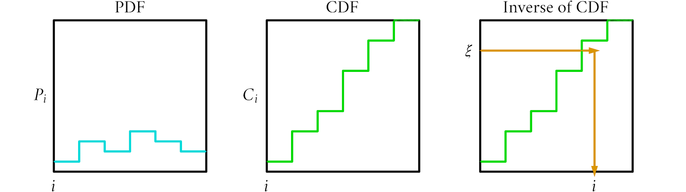
Figure 8.21. In one dimension, we can generate samples with given discrete probabilities by computing the probabilities CDF and then inverting that function.
The inversion method gives us a mechanical way to derive one-dimensional transformations, provided that we can compute the cdf and its inverse analytically, which is the case for many common distributions. In multiple dimensions, things get more complicated. In the case where the multi-dimensional PDF is the product of independent one-dimensional PDFs, than we can proceed one variable at a time. For dependent one-dimensional PDFs, we can still derive a mechanical rule using marginal PDFs, but this is outside the scope of this introductory book.
The first example we consider is the common case of remapping random values into a desired range. We have used this when computing \(\pi\) before. We can use the inversion method to derive this mapping. But in this case we can just observe that since the desired PDF is still uniform, then we just remap the values into the new domain, where the PDF is the reciprocal of the domain size. So given a random value \(\boldsymbol{\xi} \in [0,1)^d\), we can remap it to a value \(\mathbf{x}\) in the domain \([\mathbf{a},\mathbf{b})\) as
An example of this transformation is the one used to generate random points in a pixel. Let us consider a pixel with integer coordinates \(\mathbf{i}\) from an image of resolution \(\mathbf{r}\), illustrated in Figure 8.22. The image coordinates \(\mathbf{u}\) of the pixel samples can be computed as \(\mathbf{u} = (\mathbf{i} + \boldsymbol{\xi}) / \mathbf{r}\). We map these coordinates to points on a pixel sensor \(\mathbf{q}\) with the transformation we derived in the last chapter, that we report here for completeness. We write \(\mathbf{q} = \mathbf{F} \cdot [-(\mathbf{u} - 1/2)\mathbf{s},l]^T\) where \(\mathbf{F}\) is the camera frame, \(\mathbf{s}\) is the sensor size, and \(l\) is the distance of the sensor from the lens. The resulting PDF is the inverse of the pixel area \(A_\text{pixel} = (s_1 / r_1) (s_2 / r_2)\). Putting it all together, we have
To map these coordinates to points \(\mathbf{q}\) on a pixel, we can use the transformation \(\mathbf{q} = \mathbf{F} \cdot \mathbf{u}\), derived in the last chapter, where \(\mathbf{F}\) is the camera frame,
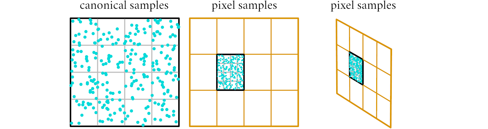
Figure 8.22. Random points on a pixel (middle), in image coordinates, are generated by translating and rescaling canonical random numbers (left) to cover the pixel area. The three-dimensional point location are then obtained by applying an affine transformation (right).
Now let us consider generating points on a disk of radius \(a\) whose position and orientation is given by a frame \(\mathbf{F}\). This is helpful to compute integrals over a disk-shaped lens aperture. We can generate random points \(\mathbf{p}\) on the disk by first generating random points \(\mathbf{u}\) on the unit disk, of radius one centered at the origin, and then transforming them to world coordinates with \(\mathbf{p} = \mathbf{F} \cdot (a \mathbf{u})\). If we write \(\mathbf{u}\) in polar coordinates as \(\mathbf{u} = [r\cos\phi,r\sin\phi,0]^T\), then the transformation amounts to mapping two canonical random values to the radius \(r = \sqrt{\xi_1}\) and the angle \(\phi=2\pi\xi_2\). Figure 8.23 shows this transformation. We map the angle directly since the area of a differential patch on a disk is the same for all values of \(\phi\). For the radius, we instead have to account for the fact that the area of a differential patch is proportional to its radius in polar coordinates. Intuitively you can think of this as the change in area of concentric thin circles centered on the origin. To obtain a uniform distribution, we want to same number of samples per unit area, that we obtain by placing less samples as the radius increases. The final transformation, shown in Figure 8.23, can be written as
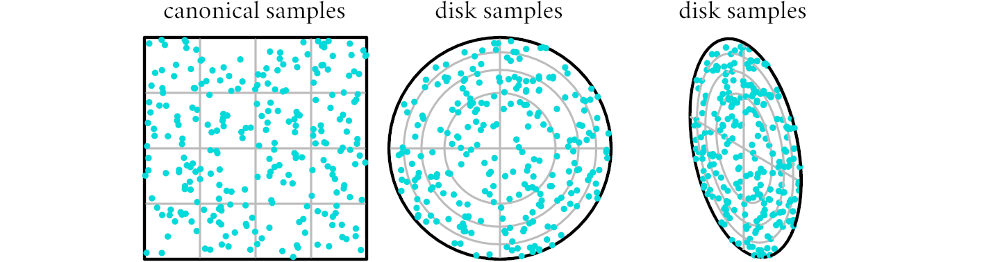
Figure 8.23. We generate random points in a disk (middle) by mapping canonical random points (left) to polar coordinates in a manner that ensures a uniform distribution. We can transform the two-dimensional disk points to three dimension by applying an affine transformation (right).
Wer derive the the transformation by working directly on the unit disk, since the frame transformation does not change the PDF, and since the scaling by a constant \(a\) just scales the PDF by a constant factor \(p_\text{disk}\)=\(p_\mathbf{u}/a^2\), without changing the point distribution. We start by writing the point on the unit disk in polar coordinates as \(\mathbf{u} = [r\cos\phi,r\sin\phi,0]^T\), and then writing the change in local area going from cartesian to polar coordinates, that is proportional to the radius, as \(dA_\mathbf{u} = r dr d\phi\). The desired point PDF is uniform over the disk, so it is just the inverse of the disk area, \(p_\mathbf{u}(\mathbf{u}) = 1 / \pi\). From the change of variable, we can relate the point PDF to the PDF in polar coordinates, as \(p_{(r,\phi)}(r,\phi) = r p_\mathbf{u}(\mathbf{u}) = r/\pi\). The latter can be written as the product of two independent PDFs, for radius and angle respectively, as \(p_{(r,\phi)}(r,\phi) = p_r(r) p_\phi(\phi)\). The integral of each PDF is normalized independently, so we have that \(p_r(r) = 2 r\) and \(p_\phi(\phi) = \pi/2\). From these equations we can derive the transformation for the radius and angle. Since the PDF of the angle is a constant, we can just rescale a canonical random value \(\xi_2 \in [0,1)\) to \(\phi \in [0, 2\pi)\) by setting \(\phi = 2 \pi \xi_2\). For the radius, we use the inversion method to derive the transformation from a canonical random value \(\xi_1 \in [0,1)\) to a radius \(r \in [0,1)\). We first write the cdf of the radius as \(c(r) = \int_0^r p_r(r') dr' = r^2\), and then invert the cdf to obtain the final transformation \(r = \sqrt{\xi_1}\).
We can generate samples on triangles with a similar procedure, that we will not derive for brevity. In this case, we first transform two canonical random numbers to the barycentric coordinates \((1 - \sqrt{\xi_1}, \xi_2 \sqrt{\xi_1})\), and then use barycentric interpolation to obtain the final points. The final transformation, illustrated in Figure 8.24, is written as
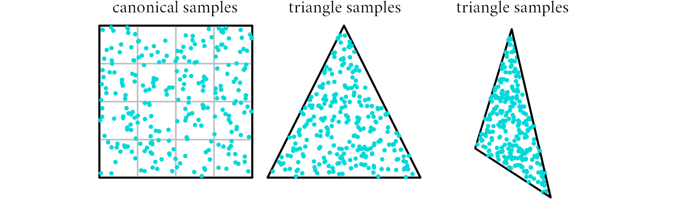
Figure 8.24. We generate random points on a triangle by transforming canonical random points (left) to barycentric coordinates (middle) in a manner that ensures a uniform distribution. Points in the triangle are then obtained with barycentric interpolation (right).
We can extend the previous method to generate random points on a triangle mesh, by first selecting a triangle \(t\) with probability \(P_t\) proportional to its area \(P_t \propto A_t\), and then generating a random point on that triangle. We pick the triangle \(t\) using the discrete inversion method, and a point on that triangle with the previous formula. The whole procedure, illustrated in Figure 8.25, can be summarized as
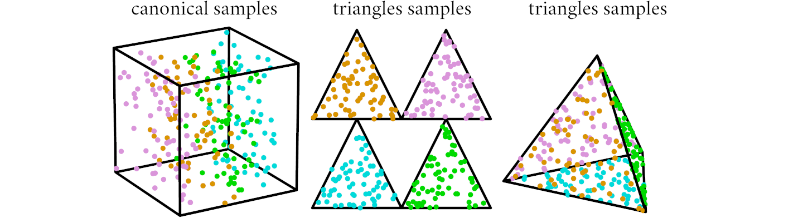
Figure 8.25. We generate random points on a triangle mesh by first selecting a triangle, and then transforming canonical random numbers to barycentric coordinates. The whole procedure requires three canonical random numbers (left) that get mapped to pairs of triangle index and barycentric coordinates (middle), to finally become mesh points via barycentric interpolation (right). Here we color samples mapped to different triangles with different colors.
The inversion procedure can be used to generate random directions with desired distributions. The most commonly-used ones are generating directions on the hemisphere oriented along the surface normal above a point. We describe the hemisphere orientation with a frame \(\mathbf{F}_\mathbf{n}\) that maps the surface normal \(\mathbf{n}\) to the frame \(z\) axis. To derive transformations, it is helpful to work in local coordinates, and first generate directions \(\mathbf{u}\) on the unit hemisphere to then transform them to world coordinates \(\mathbf{d}=\mathbf{F}_\mathbf{n}\cdot\mathbf{u}\). We write directions in the local spherical coordinates as \(\mathbf{u} = (\cos\phi\sin\theta,\sin\phi\sin\theta,\cos\theta)\), where \(\theta\) is the angle between the direction and the \(z\) axis and \(\phi\) is the angle in the \(xy\) plane. We obtain our transformations by mapping two canonical random values to the two angles, where the angle \(\phi = 2\pi\xi_2\) is just scaled to cover the entire circle, while the angle \(\theta\) is transformed to obtain the desired PDF in \(\theta\). For uniform directions on the hemisphere, shown in Figure 8.26, we set \(\cos\theta = \xi_1\), to obtain the final transformation
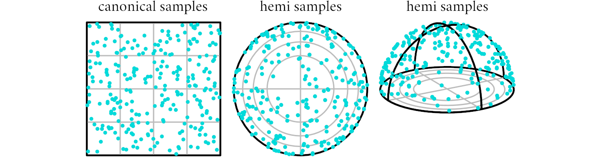
Figure 8.26. We generate random direction on the hemisphere by transforming canonical random numbers (left) to points on the unit hemisphere (middle), to then obtain the final points by affine transformation (right).
The most used of these transformation is the one that generates directions with PDF proportional to the cosine, shown in Figure 8.27. This transformation is obtained by setting \(\phi=2\pi\xi_2\) as before, while assigning \(\cos\theta = \sqrt{\xi_1}\), as
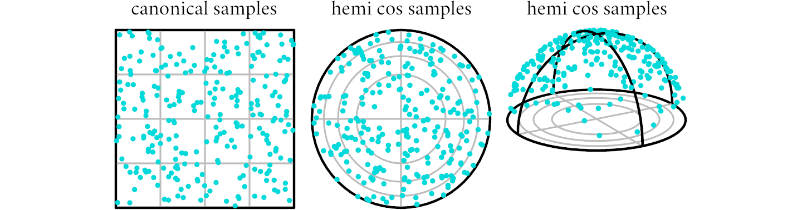
Figure 8.27. We generate random directions on the hemisphere by transforming canonical random numbers (left) to points on the unit hemisphere (middle), to then obtain the final points by affine transformation (right). Here samples are more concentrated near the normal direction to obtain a cosine-weighted distribution.
Finally, we can generate directions with PDF proportional to the cosine raised to a power \(n\), that can be considered a generalization of the two previous ones, by setting \(\phi = 2 \pi \xi_2\) and \(\cos\theta = \xi_1^{1/(n+1)}\)
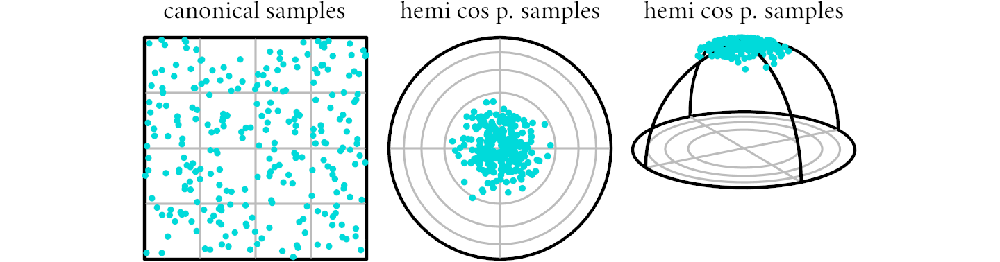
Figure 8.28. We generate random directions on the hemisphere by transforming canonical random numbers (left) to points on the unit hemisphere (middle), to then obtain the final points by affine transformation (right). Here samples are more concentrated near the normal direction to obtain a power-cosine-weighted distribution.
Similarly, we can generate directions on a sphere, by first generating random points on the unit sphere, and then transforming them to world coordinates. We can derive the transformation following a similar procedure as used for the hemisphere. The resulting transformation, illustrated in Figure 8.29, can be written as
TODO: FIX EQUATIONS
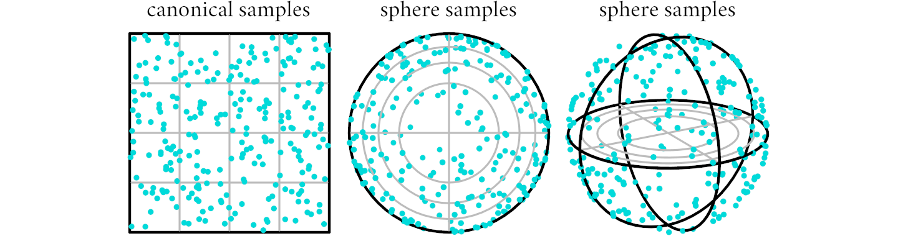
Figure 8.29. We generate random directions on the sphere by transforming canonical random numbers (left) to points on the unit sphere (middle), to then obtain the final points by affine transformation (right).
We can derive these transformations in a manner similar to the one for disks. We will focus on generating hemispherical directions with PDF proportional to the cosine, since it is the most commonly used one. We work directly in local coordinates, since the frame transformation since it does not change the PDF. We start by writing the direction in spherical coordinates as \(\mathbf{d} = (\cos\phi\sin\theta,\sin\phi\sin\theta,\cos\theta)\), and then write the change in local area going from cartesian to spherical coordinates, that is proportional to the sine of the angle, as \(d\omega_\mathbf{d} = \sin\theta d\theta d\phi\). The desired direction PDF is proportional to the cosine, that after normalization becomes \(p_\mathbf{d}(\mathbf{d}) = \cos\theta / \pi\). From the change of variable, we can relate the direction PDF to the PDF in spherical coordinates, as \(p_{(\theta,\phi)}(\theta,\phi) = \sin\theta p_\mathbf{d}(\mathbf{d}) = \sin\theta \cos\theta / \pi\). The latter can be written as the product of two independent PDFs, for the two angles respectively, so we have \(p_{(\theta,\phi)}(\theta,\phi) = p_\theta(\theta) p_\phi(\phi)\). The integral of each PDF is normalized independently, so we have that \(p_\theta(\theta) = 2\cos\theta\sin\theta\) and \(p_\phi(\phi) = 1 / 2 \pi\). From these equations we can derive the transformation for two angles. Since the PDF of the angle \(\phi\) is a constant, we can just rescale a canonical random value \(\xi_2 \in [0,1)\) to \(\phi \in [0, 2\pi)\) by setting \(\phi = 2 \pi \xi_2\). For the angle \(\theta\), we use the inversion method to derive the transformation from a canonical random value \(\xi_1 \in [0,1)\) to an angle \(\theta \in [0,\pi)\). We first write the cdf of the angle as \(c(\theta) = \int_0^\theta p_\theta(\theta') d\theta' = cos^2\theta\), and then invert the cdf to obtain the final transformation \(\cos\theta = \sqrt{\xi_1}\).
Another common transformation technique to reduce variance is to distribute samples more uniformly in the domain. This reduce variance while keeping the same number of samples. The most common method is stratified sampling, where we divide the domain in equally-sized subdomains and then place a random sample within each one, as shown in Figure 8.30. We can write the transformation for a generic \(d\)-dimensional domain with \(s\) samples for each dimension, totalling \(n = s^d\) samples, as
While this method is very effective in two dimensions, it does not scale well in higher dimensions, since the number of samples grows exponentially with the number of dimensions. Other methods have been proposed to reduce variance in a similar manner, but they remain hard to use in practice, so we will not cover them in this book.
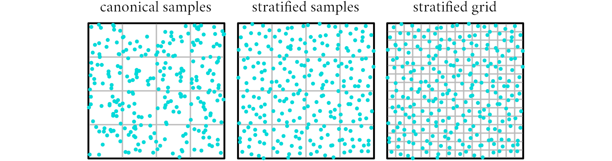
Figure 8.30. Stratified sampling pattern for a two dimensional domain.
8.11. Monte Carlo Estimation of Pixel Integrals
We will now write a simple path tracer that solves the rendering equation using Monte Carlo integration. This first renderer will support only matte materials lit by area lights and environment illumination.
Let us start from the radiance recorded by a camera with a fixed aperture, where the radiance of a pixel is the average over points on the pixel and points on the lens of the incoming radiance at the lens aperture. With Monte Carlo integration, we estimate this integral by randomly choosing points on the pixel and lens and computing the average incoming radiance, normalized by the points PDFs. With the notation introduce in the previous sections, we can write the integral and its Monte Carlo estimate as
To evaluate the Monte Carlo estimator, we generate random points \(\mathbf{q}_s\) on the pixel and \(\mathbf{e}_s\) on the lens with uniform PDFs \(p_\text{pixel}(\mathbf{q}) = 1/A_\text{pixel}\) and \(p_\text{lens}(\mathbf{e}) = 1/A_\text{lens}\) by applying the transformations \(\mathbf{q}_s = \mathbf{w}_{\text{pixel}_\mathbf{i}}(\boldsymbol{\xi}_1)\) and \(\mathbf{e}_s = \mathbf{w}_\text{lens}(\boldsymbol{\xi}_2)\) to canonical random values \(\boldsymbol{\xi}_1\) and \(\boldsymbol{\xi}_2\). We show this Monte Carlo estimator in Figure 8.31. We derived the pixel transformation in the sampling section, while the lens transformation can be obtained simply by applying the disk transformation \(\mathbf{e} = \mathbf{w}_\text{disk}(\boldsymbol{\xi}_2)\) with the lens aperture as radius. The areas and PDFs cancel out, so we can write the estimator as
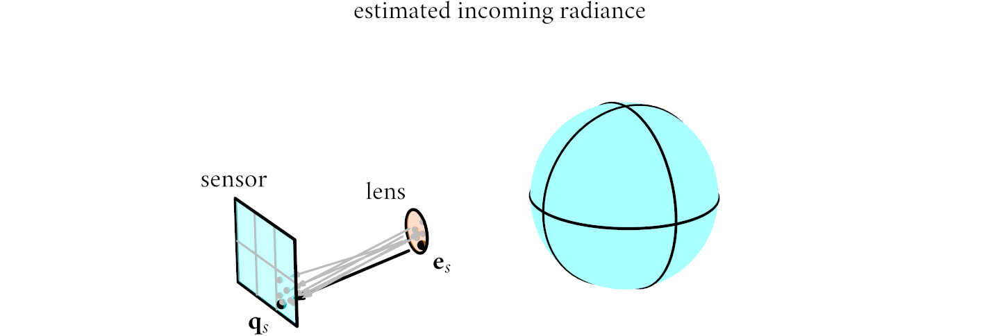
Figure 8.31. Illustration of estimating an average value over the pixel and lens computed with Monte Carlo integration.
We now have to compute the ray direction \(\mathbf{d}\) that corresponds to the pixel and lens point. As you recall, real-world cameras have complex lens arrays within the camera body that we do not want to model precisely. Instead, we will approximate the lens array as one lens that follows the thin lens model phenomenologically. In this model, we assume that the sensor is placed at a distance \(l\) from the lens equivalent to the lens effective focal length and define the focus plane as the plane at which the lens array has been focused at. The focus plane is orthogonal to the camera viewing direction and at a distance \(f\) from the lens. In the thin lens model, all points on the focus plane are in focus on the sensor plane. This happens if all rays that originate from points on the focus plane end up reaching the same point on the sensor plane. We also know that all rays that go through the center of the lens are not bent by the lens.
We take advantage of these phenomenological observation to derive the ray direction for a point on the lens in two steps, shown in Figure 8.32. Given a point \(\mathbf{q}\) on the sensor, we first trace a ray through the camera center and compute its intersection \(\mathbf{f}\) with the focus plane. In local camera coordinates, this intersection is given by \(\mathbf{f}^l = \hat{\mathbf{q}}^l f / \hat{q}^l_z\), where \(\hat{\mathbf{q}}^l\) is the direction from the sensor point. We then connect the lens point \(\mathbf{e}\) with the point on the focus plane \(\mathbf{f}\) by defining the ray direction \(\mathbf{d}\) as the direction that points from \(\mathbf{e}\) to \(\mathbf{f}\). Putting it all together we get
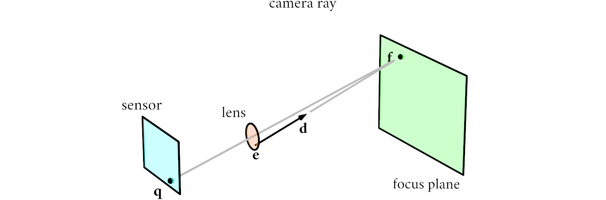
Figure 8.32. Camera ray for a thin-lens model.
To compute the whole image, we evaluate the Monte Carlo estimator at each pixel. Depending on the order is which we compute pixels and averages, we get slightly different algorithms. The simplest implementation is to loop over each pixel and compute the average of the samples for each pixel independently. This is the same algorithm we used for the ray tracer, and it is the most common setup. Since pixel estimates are independent, we can compute them in parallel without makes any changes to the algorithm. This is why sometimes ray tracing is called "embarrassingly parallel". We only have to ensure that we get different random number sequences for each pixel, which we can do by using a different random number generator for each pixel. This implementation can be sketched as
A second possibility is to render one sample at a time but for the whole image. This is useful to get a preview of the image while it is being rendered, and it is often called "progressive rendering". Most current path tracer are progressive in nature since getting quick preview images is crucial for most design applications. To implement this algorithm, we loop over samples first and then pixels, keeping the accumulated radiance and random number generator for each pixel in a separate buffer. This implementation can be sketched as
An example image rendered with this algorithm is shown in Figure 8.33, where we set the incoming radiance to just the color of the surface, to get a quick preview of the scene.
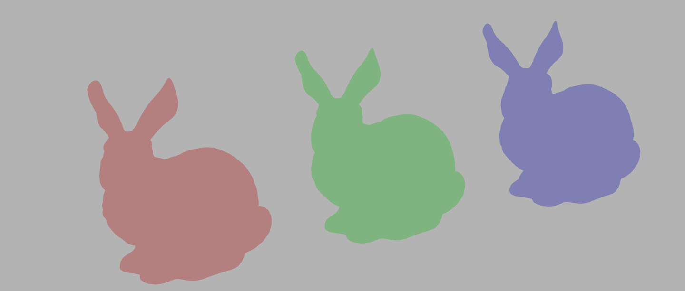
Figure 8.33. Image of the average surface color computed with Monte Carlo integration.
8.12. Monte Carlo Estimation of The Rendering Equation
The incoming radiance \(\mathbf{L}_i(\mathbf{e}, \mathbf{d})\) at the lens point \(\mathbf{e}\) in the direction \(\mathbf{d}\) is the same as the outgoing radiance \(\mathbf{L}_o(\mathbf{p}, -\mathbf{d})\) of the fist visible point \(\mathbf{p}\) along the ray \(\mathbf{e}+t\mathbf{d}\), if an intersection occurs, or the environment radiance \(\mathbf{E}(\mathbf{d})\) otherwise. More succinctly, we can write
We now need to estimate the outgoing radiance at the intersection point, that is the sum of the emitted and the reflected radiance, written as
The emitted radiance is a property of the surface material. In our model, we consider surfaces that emit radiance in all directions equally. This means that the emitted radiance is a constant in the upper hemisphere and zero in the bottom one. If we write the normal at the intersection point as \(\mathbf{n}_\mathbf{p}\), we can write the emitted radiance as
The reflected radiance is the integral of the incoming illumination multiplied by the BSDF and cosine. We estimate the reflected radiance using Monte Carlo integration with just one sample, since the sample average is computed in the outer loop. The use of a single sample may seem confusing at first, but it is the same as what we did for the integral over lens and pixel, where we computed only one average for both integrals. As you recall, Monte Carlo estimators do not depend on the dimensionality of the domain. The integral over lens and pixels is just a four dimensional integral over the two two-dimensional domains of pixel and lens. If we add the integral over the hemisphere, we get a six dimensional integral over the three two-dimensional domains. We can estimate this integral with the sample average over all three domains. But to keep equations shorter, we will just write the integral over the hemisphere with one sample, since we are computing the sample average over the other two domains in the outer loop.
With this consideration, we can write the estimator for the reflected radiance by just picking a random incoming direction \(\mathbf{i}_s\) according to some distribution \(p_\mathbf{i}\), and multiplying the incoming radiance \(\mathbf{L}_i(\mathbf{p},\mathbf{i}_s)\) at \(\mathbf{p}\) from \(\mathbf{i}_s\) by the BSDF \(f_\mathbf{p}(\mathbf{n},\mathbf{o},\mathbf{i}_s)\), and the cosine of the incoming direction \(\mathbf{n} \cdot \mathbf{i}_s\). All together, can write the reflected radiance estimator as
The above formulation works for any material and any distribution of random directions. In fact, pathtracing implementations differ mainly in the types of materials supported and the PDF used to sample the hemisphere. As we will show in the next chapter, the choice of the PDF is crucial to reduce variance for most materials. For now, let us focus on opaque surfaces, and generate random directions over the hemisphere with cosine distribution. With this PDF, the cosines simplify out of the estimator since they are in both the numerator and denominator. This times though, it is preferable to keep them in the estimator to make it clear that we are accounting for the cosine in the PDF. Figure 8.34 shows a diagram of this estimator, that we can write as
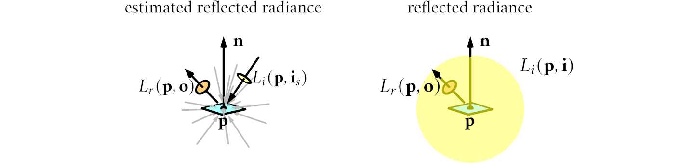
Figure 8.34. Estimate of the reflected radiance from a random incoming direction.
Now we are left with the problem of estimating the incoming radiance \(\mathbf{L}_i(\mathbf{p},\mathbf{i}_s)\) that comes to the intersection point \(\mathbf{p}\) from the incoming direction \(\mathbf{i}_s\). In this case, we can repeat the same procedure, and estimate the incoming radiance as the outgoing radiance \(\mathbf{L}_o(\mathbf{q}_s, -\mathbf{i}_s)\) of the next intersection point \(\mathbf{q}_s=\text{raytrace}(\mathbf{p}, \mathbf{i}_s)\), or the environment \(\mathbf{E}(\mathbf{i}_s)\) in case no intersection occurs. This is shown in Figure 8.35, and written as
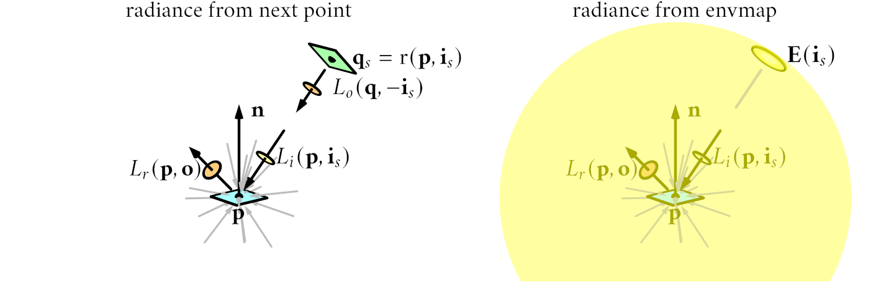
Figure 8.35. Estimate of the incoming radiance at a point from a random direction.
This leads to a recursive procedure that estimates all bounces of the light path by tracing rays and estimating the radiance at each intersection point. This recursive procedure may seem natural, but in fact we cannot derive it from a direct application of Monte Carlo to the rendering equation. In fact, the rendering equation is written as the integral of the unknown radiance, that we determine by solving the equation itself. But Monte Carlo integration can only be applied to integrals of known functions, so it cannot be written directly in this form. To formally derive path tracing, we would need to introduce a different form of the rendering equation, called path formulation, that is beyond the scope of this book. The estimator we are writing is derived from that formulation, but can be more easily understood as a recursive procedure first.
The question then becomes when to stop the procedure if we always find an intersection. This is the common case of closed environments, such as rooms in a building. If we stop after a fixed number of bounces, we are not solving the rendering equation correctly, but computing an approximation of it. The approximation quality though depends both on the number of bounces and the scene configuration, so choosing a fixed number is generally hard. For example, a few bounces often work for scenes with matte materials, but scenes with glass and mirrors may require a higher number of bounces.
Instead, we will stop recursion stochastically using Russian roulette. The idea is to pick a probability of skipping the evaluation of the next intersection each time we need to evaluate the incoming radiance. At each samples, we then test whether to stop by checking if a random number is below that probability, and correct the sample otherwise. We can choose the probability in any manner we want. One possibility is to chose it proportional to the total reflectance of the material, to favor surfaces that absorb less light. If we write the Russian roulette probability as \(P_{r}\) and the estimator of the incoming radiance radiance as \(\mathbf{L}_i^r\), we can write
If we put all these terms together, we get the estimator for the incoming radiance. From all the steps written before, it may seem that an implementation of the estimator is complex, but in fact it is quite simple. For clarity, we report here a sketch of a possible implementation written as
This estimator works for all materials, but is most efficient for matte surfaces, whose BSDF we wrote previously. Figure 8.36 shows an image of a scene with matte surfaces, lit with an environment map, rendered with path tracing estimator we just derived.
Figure 8.36. Path-traced image with matte surfaces lit by a constant
environment.
Adding lights to the scene is straightforward. We just need to add a constant emission to the material of some surfaces. Figure 8.37 shows an example image of a scene lit with both environment maps and area lights. Note that shadows appear naturally in the image since rays that are traced from scene object may get blocked by other objects before reaching the light.
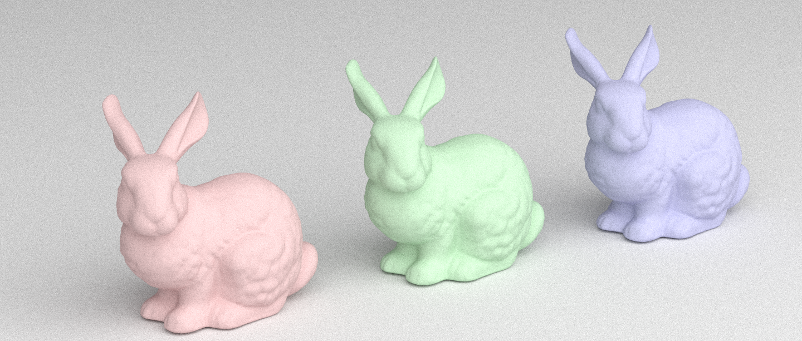
Figure 8.37. Path-traced image lit by emissive surfaces and a constant environment.
We can add textures to the scene to modulate surface color, as we have done in the previous chapter. Figure 8.38 shows an example of a scene with textured surfaces and an environment map.
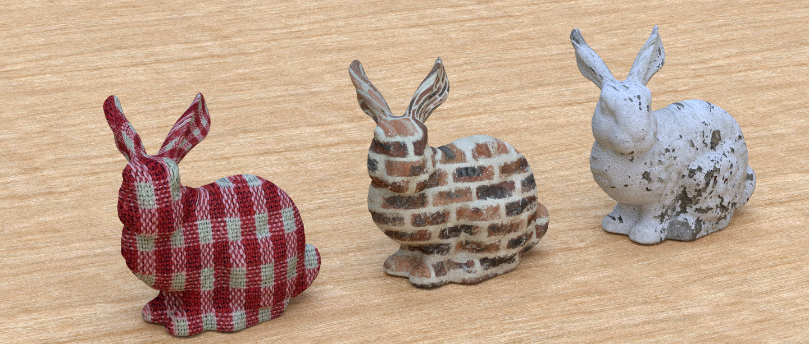
Figure 8.38. Path-traced image with textured objects and an environment map. Environment and textures from PolyHaven.
8.13. Realistic Materials
So far, we have only modeled matte surfaces, that reflect light equally in all directions. This is a good approximation for some surfaces, but it does not work for surfaces that reflect light in a specular manner, such as mirrors and metals, or surfaces that are transparent, such as glass. In this section, we will write the BSDF for more materials and show how to integrate them in a path tracer efficiently.
Let us start by rewriting the estimator for matte surfaces, since we will derive the other estimators from it. Matte surfaces reflect light equally in all directions, with a BSDF that is constant in the upper hemisphere and zero in the lower one, written as
To reduce variance, we want to choose incoming directions with a distribution that is approximately proportional to the integrand. For the reflected radiance, the integrand is the product of the incoming radiance, the BSDF and the cosine. Since the incoming radiance is unknown, we can sample incoming directions with a distribution that is approximately proportional to the product of the BSDF and the cosine. In the case of matte surfaces, the BSDF is constant in the upper hemisphere and zero in the lower one, so we can choose a distribution that is proportional to the cosine of the incoming angle, that we write as
The reflected radiance estimator for matte surfaces, illustrated in Figure 8.39, is just the estimator we derive in the previous section. Here we explicitly write it in terms of the matte functions as
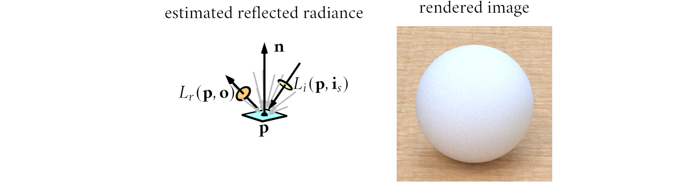
Figure 8.39. Reflected radiance for a matte surface.
Written in this manner, it becomes clear that we can generalize the previous estimator to different materials by writing the BSDF \(f\) for the material, and choosing a distribution \(p\) and the corresponding transformation \(\mathbf{w}\) with which to sample incoming directions.
We first consider polished reflective surfaces, such as mirrors and metals. These surfaces scatter light in a very thin cone around a specular direction. The amount of light reflected is predicted by the Fresnel equations. For metals, the reflection depends on the wavelength of light, giving these surfaces a colored appearance, and increases with the angle of incidence. For metals, the Fresnel equations are quite complex, but we can approximate them with a simpler model, due to Christophe Schlick, that is good enough for most cases. The Schlick approximation \(\mathbf{F}_s\), plotted in Figure 8.40, is written in terms of the reflectance at normal incidence \(\mathbf{F}_0\), that in our material model is specified by the material color \(\mathbf{k}_c\), as
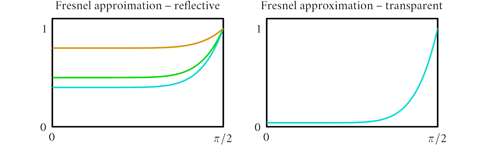
Figure 8.40. Fresnel reflectance for the Schlick approximation.
We can model the behavior of polished reflectors with a Dirac's delta function that, intuitively, is infinite for a single direction \(\mathbf{s}\) and zero everywhere else. More formally, a Dirac's delta function \(\delta_\omega(\mathbf{s},\mathbf{d})\), in the solid angle measure \(d\omega\), is a generalized function defined by the identity
For polished metals, the incoming light is reflected in a single direction, called specular direction, that lies in the plane defined by the normal and the incoming direction, and forms the same angle with the normal as the incoming direction. For convenience in writing the radiance estimator, we write the next equations by exchanging the incoming and outgoing direction, since the BSDF is symmetric. In this notation, the specular direction can be written as \(\mathbf{i}_r = -\mathbf{o} + 2 (\mathbf{o} \cdot \mathbf{n}) \mathbf{n}\). The BSDF can be written as a Dirac delta function of the specular direction, scaled by the Fresnel term and divided by the cosine of the reflected angle, to cancel the cosine in the reflected radiance equation. Putting it all together, we can write
We compute the reflected radiance by substituting the reflection BSDF in the reflected radiance integral to obtain an analytic solution written as
In this case, we can write the reflected radiance as the incoming radiance from a single direction scaled by the Fresnel term. Since the solution is analytic, we do not need to apply the Monte Carlo method, but can simply evaluate the equation as is. In the end, the reflected radiance for polished reflectors, illustrated in Figure 8.41, is written as
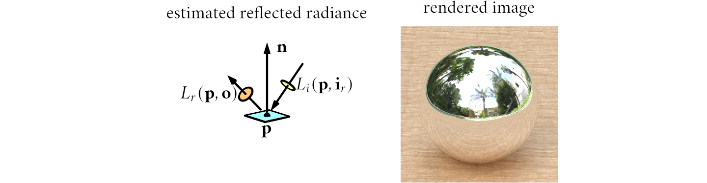
Figure 8.41. Reflected radiance for a polished reflective surface.
Polished transparent surfaces are similar to polished reflective surfaces, except that they also transmit light. The amount of light reflected is again predicted by the Fresnel equations, while the amount of light transmitted is one minus the fresnel term. In this case though, most light is transmitted so the reflected radiance is much smaller than the transmitted one. Also, the reflected radiance depends only slightly on the wavelength of light, so transparent surfaces are normally modeled as colorless.
We begin by modeling thin surfaces, such as light bulbs or windows, for which we can ignore the object interior. In this case, we can approximately ignore the effects of refraction and model the transmitted direction as the negated incoming direction, corresponding to light that travels through the material without changing direction. In these cases, we can use the Schlick approximation for the Fresnel term, as we did for polished reflectors, with the reflectance at normal incidence can be derived from the index of refraction \(\eta\) as \(F_0 = (\eta - 1)^2/(\eta + 1)^2\). Many common transparent materials have an index of refraction that is approximately \(1.5\), giving us a reflected of about \(4\%\) at normal incidence. Figure 8.40 plots the Fresnel term for transparent surfaces. To model the interaction with the object interior, we scale the transmitted radiance by the surface color to model colored surfaces. Putting it all together, we can write the BSDF for thin polished transparent surfaces as
To compute the reflected radiance, we integrate the incoming radiance weighted by the BSDF and the cosine, as we did for polished metals, and obtain
The simplest way to compute this function would be to send two rays, one in the reflected direction and one in the transmitted direction, and sum their contribution to the outgoing radiance. But this would lead to the exponential increase in the number of rays we want to avoid. Instead, we randomly choose between the reflected and transmitted direction, with a probability proportional to the Fresnel term, and scale the corresponding integrand by the selection probability. We use the Fresnel term as the selection probability to reduce variance, as a form of importance sampling. The final estimator, illustrated in Figure 8.42, is written as
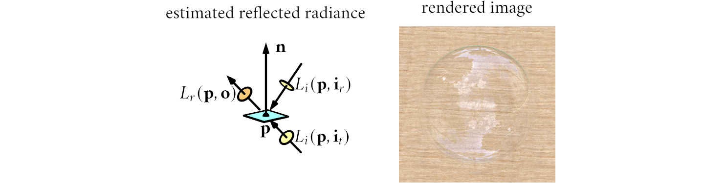
Figure 8.42. Reflected radiance for a polished transparent surface.
Refractive surfaces are more complex to handle since we need to model the object interior explicitly, which we cannot do with the rendering equation in the form we have derived so far. For now, we will model objects whose interior is a material that does not absorb nor scatters light, such as clear glass, and focus on the surface interaction. We will discuss how to model the interior later in the chapter.
The case of refraction is similar to the case of thin transparent surfaces we just presented. The main difference is that the transmitted direction is not parallel to the incoming one, but forms an angle that depends on the incoming direction and the index of refraction. We can write the BSDF for a polished refractive surface as
The previous equations work for both entering and exiting the object. In the latter case, the index of refraction is inverted to account for the change of medium. The refracted direction \(\mathbf{i}_t\) is computed by solving Snell's law, that relates the angle of incidence and the angle of refraction. Total internal reflection, namely when all lights if reflected and none transmitted, occurs when the term under the square root is negative. The term \(1/\eta^2\) is a correction that accounts for the change in direction inside the medium, and is needed to make the BSDF energy-conserving. The Fresnel term used in the previous equation is not approximated, but is the correct one derived from the Fresnel equations, and plotted in Figure 8.43. This is needed to properly account for the change in direction of the transmitted light, and can be written as
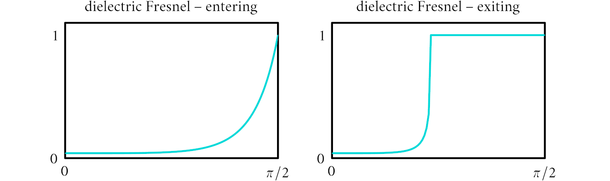
Figure 8.43. Fresnel reflectance for refractive surfaces. Note that when exiting the surface, total internal reflection may occur when all light is reflected.We can sample illumination from refractive surfaces in the same way as we did for thin transparent surfaces, by choosing between the reflected and transmitted directions with a probability proportional to the Fresnel term, and then scaling the integrand by the selection probability. The final estimator, illustrated in Figure 8.44, is written as
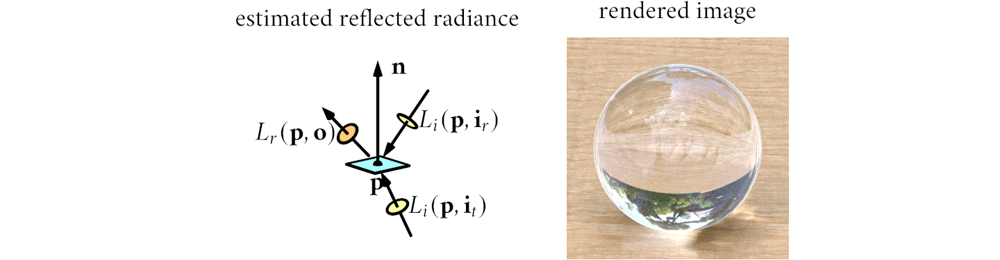
Figure 8.44. Reflected radiance for a polished refractive surface.
The polished materials we have derived so far are rare in the real-world since surfaces are often rougher. When surface details are visible, we use texture to model these surface variations. But when surface details are too small to be visible, we can model the aggregate scattering behavior with a statistical model. The most commonly-used BSDFs for rough surfaces are microfacet models, where the surface is modeled as a collection of randomly-oriented microfacets, each of which made of the same material, as shown in Figure 8.45.
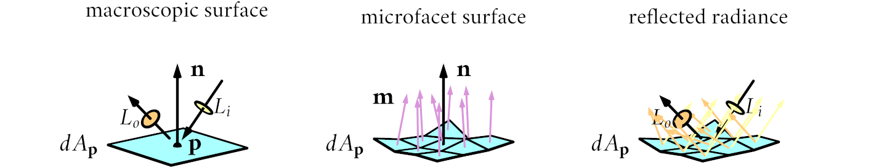
Figure 8.45. Rough surface modelled with a microfacet model.
The BSDF of a microfacet model represents the aggregate scattering of all microfacets. The main assumption of microfacet models is that the facets are small enough so that their aggregate behavior can be computed statistically, without the need to model each individual facet. The distribution of microfacet orientation is represented by the microfacet distribution function \(D(\mathbf{m})\), that is the probability density that a microfacet normal \(\mathbf{m}\) is oriented in a given direction. In general, microfacets normals are oriented mostly along the surface normal \(\mathbf{n}\), but with some variation. Over the years, several choices of microfacet distribution functions have been proposed that model different types of surfaces. The most commonly used one, at the time of this writing, is due to Trowbridge-Reitz. The width of this distributions is controlled by a parameter \(\alpha\) that is related to the surface roughness \(k_r\) in common material models as \(\alpha = k_r^2\). This distribution, plotted in Figure 8.46, is written as
In computing the aggregate BSDF, we also need to account for the fact that some microfacets are obscured by others, especially at grazing angles for both incoming and outgoing directions. This is modeled by a geometric shadowing function \(G(\mathbf{n},\mathbf{o},\mathbf{i})\) that is the probability that a microfacet with normal \(\mathbf{m}\) is visible from both the incoming and the outgoing direction. The shadowing function for the Trowbridge-Reitz distribution, plotted in Figure 8.46, is written as
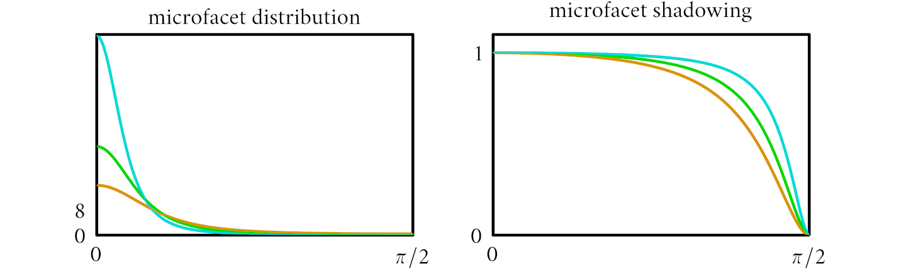
Figure 8.46. Microfacet distribution function and related shadowing function for different roughnesses.
Depending on the materials that the surface is made of, the microfacets can either reflect or transmit light. In the case of rough metals, each microfacet is modeled as a polished reflector with BSDF \(f_\text{reflection}\). The BSDF of the whole surface is the aggregate behavior of the microfacet computed as the integral, over the microfacet normals, of the microfacet BSDF scaled by the the microfacet distribution and shadowing functions. This integral can be computed analytically, giving us the BSDF of the microfacet model written as
At the end of this chapter, we report the derivation of this integral, while here we present some intuition on how to interpret it. The microfacet model depends on the half-vector \(\mathbf{h}\), that is the bisector of the incoming and outgoing directions. The half-vector corresponds to the only microfacet normal that reflects the incoming direction into the outgoing one. Its presence in the BSDF is due to the fact that the single-facet BSDFs are a Dirac's delta, that select a single reflecting direction. The Fresnel term is also evaluated at the half-vector, single it corresponds to the reflectance of the microfacets with normal \(\mathbf{h}\). The contribution of all facets aligned with the half-vector is measured by the microfacet distribution and shadowing functions, that measure the probability that a microfacet with normal \(\mathbf{m}\) is aligned with the half-vector and that it is visible from both the incoming and outgoing directions. The denominator terms are the Jacobian of the change of variable from the microfacet normal to the incoming and outgoing directions.
To compute the reflected radiance, we need to choose random directions with a distribution that is approximately proportional to the integrand. In general, this is not possible for the microfacet BSDF, since the integrand contains many terms for which we cannot apply the inversion method. The most commonly-used method is to choose a microfacet normal \(\mathbf{h}\) and then reflect the outgoing direction around it, to obtain the sampled incoming direction. The half-way vector is sampled with a PDF \(p_\text{halfway}(\mathbf{h}) = D(\mathbf{h})|\mathbf{n} \cdot \mathbf{h}|\) with a transformation \(\mathbf{w}_\text{halfway}(\boldsymbol{\xi})\) that we can derive using the inversion method in a manner similar to the previous derivations, and that is written as
From the microfacet normal, we can then compute the sampled incoming direction by reflecting the outgoing direction around the microfacet normal, as \(\mathbf{i}_s = -\mathbf{o} + 2 (\mathbf{o} \cdot \mathbf{h}_s) \mathbf{h}_s\). This last transformation induces another change of variable with \(d\omega_\mathbf{i} = 4 |\mathbf{h} \cdot \mathbf{i}| d\omega_\mathbf{h}\), making the PDF for the sampled incoming direction be \(p_\text{microfacets}(\mathbf{i}) = p_\text{halfway}(\mathbf{h}) / (4 |\mathbf{h} \cdot \mathbf{i}|)\). Putting it all together, we can write the estimator for the reflected radiance, illustrated in Figure 8.47, as
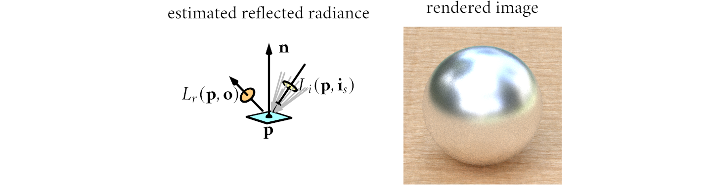
Figure 8.47. Reflected radiance for a rough reflective surface.
The microfacet model we have derived so far is for rough metals, but can also be extended to rough refractive surfaces. This case is too complex to be derived here, so we leave the interested reader to more specialized reading materials.
May real-world materials can be modeled as layered surfaces. For example, plastics can be modeled as a thin layer of transparent material over a diffuse base. In this case, the BSDF can be approximated by a weighted sum of two layers, where the weight of the bottom layer is the fraction of light that is transmitted by top one. We can model the top layer as a transparent BSDF and the bottom layer as a matte one. In general, it is not possible to compute the transmitted radiance analytically. State of the art models use a Monte Carlo estimator to evaluate the BSDF itself, but this is beyond the scope of this introductory text. Instead, we will use a simpler model that is good enough for our case, and model the transmitted radiance as one minus the reflected Fresnel term. Putting it all together, we can write the rough BSDF for a layered surfaces as
To write an estimator for this BSDF, we need to choose a distribution with which to sample incoming directions. Since we know how to sample each component of the BSDF, we can use MIS to generate the samples. We will randomly choose whether to sample the specular or the matte component, with a probability \(p_s\) proportional to the Fresnel term \(F(\mathbf{n}, \mathbf{o})\), since that measures the contribution of the specular term. We can then apply the transformation function corresponding to the selected component. This procedure has a PDF that is the sum of the PDFs of the two components, that we can write as
Putting it all together, we can write the estimator for the reflected radiance of glossy surfaces, illustrated in Figure 8.48, as
Figure 8.48. Reflected radiance for a glossy surface.
The glossy BSDF we have derived combines single-layer BSDFs to model a more complex behavior. Several other materials can be modeled as combinations of simpler BSDFs. For examples, metallic paint, cloth, weathered surfaces, etc. We will not report here these variations for brevity, instead focusing the rest of our presentation to improving the efficiency of the path tracing algorithm.
Before continuing tough, it is helpful to write the algorithm that correspond to the BSDFs we have derived so far. From the previous estimators, we see that we have to handle two cases. For BSDFs \(f_\text{smooth}(\mathbf{p},\mathbf{o},\mathbf{i})\) that do not contain delta terms, we randomly choose the incoming direction \(\mathbf{i}_s\) with a PDF \(p_\text{smooth}(\mathbf{i})\) proportional to the BSDF and then weight the incoming radiance \(\mathbf{L}_i(\mathbf{p},\mathbf{i}_s)\) by the BSDF and the cosine and scaled it by the sample PDF. We write this estimator as
For BSDFs \(f_\text{delta}(\mathbf{p},\mathbf{o},\mathbf{i})\) that contain delta terms, we randomly choose which direction \(\mathbf{i}_s\) to sample from the possible delta directions, and then weight the incoming radiance \(\mathbf{L}_i(\mathbf{p},\mathbf{i}_s)\) by the non-delta terms in the BSDF \(\tilde{f}_\text{delta}(\mathbf{p},\mathbf{o},\mathbf{i})\) and the cosine, scaled by the probability \(P_\text{delta}(\mathbf{i}_s)\) of choosing the delta direction. We can write this as
The last material feature we want to consider is the use of textures to model coverage. In the image section, we saw that the alpha channel in images models the percentage of the pixel that is covered by the object. Since we do not know which part of the pixel is covered, we can consider the coverage to be uniformly distributed over the pixel. We can model this by taking the weighted sum of the outgoing radiance at the intersection point and the incoming radiance from the continued ray, where the weight is the texel coverage. This is shown in Figure 8.49 and written as
As discussed before, using this formula directly would lead to an exponential increase in the number of rays, since we would need to send two rays for each intersection point. Instead, we can randomly choose whether to compute the outgoing radiance at the intersection point or continue the ray as
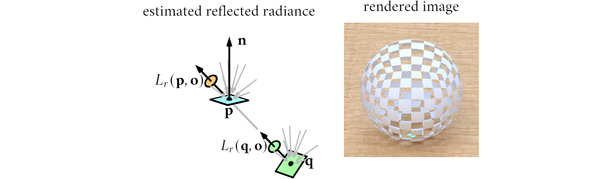
Figure 8.49. Outgoing radiance for a surface with an opacity mask.
If we put all these components together, we can sketch a path tracer that supports all material types as
The path tracer implemented so far can render images with realistic materials, as shown in Figure 8.50 and Figure 8.51.
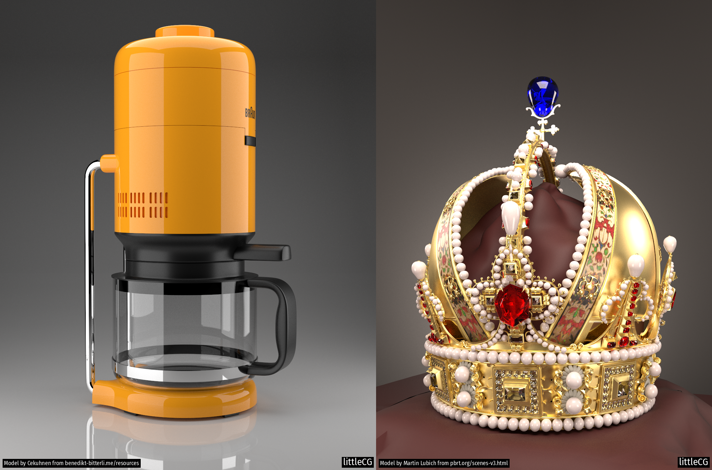
Figure 8.50. Path traced image of scenes with realistic materials. Left model courtesy of Cekuhnen from Bitterli's Resources. Right model courtesy of Martin Lubich from Pbrt.
Figure 8.51. Path traced image of a scene with realistic materials. Model
courtesy of Mareck from Bitterli's Resources.
8.14. Realistic Illumination
The numerical accuracy of Monte Carlo estimation depends on the number of samples, as shown in Figure 8.52. As you can see, as we increase the number of samples, the image converges to the correct solution. For low number of samples, images rendered with Monte Carlo exhibit noise, that comes from the stochastic nature of the estimator. Noise appears when adjacent pixels have different values that originates from the sampled directions that are chosen independently for each pixel. Noise is unavoidable in Monte Carlo estimation, but it can be reduced by using more samples and more efficient PDFs.
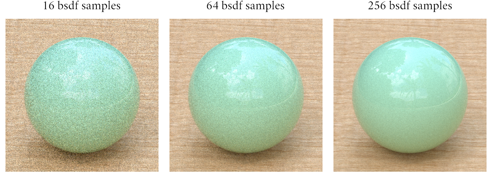
Figure 8.52. Pathtraced images with different number of samples.
A particularly problematic case is when the scene contains small light sources, since the probability of sampling a direction that hits the light source is small. For paths that never hit the light source, the estimator is zero, so they do not contribute to the sample mean, thus raising variance significantly. This results in increased noise as shown in Figure 8.53.
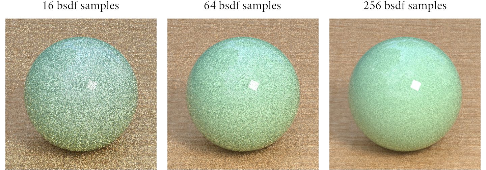
Figure 8.53. Pathtraced images with different number of samples.
We can make this more explicit by writing an estimator for the whole path. We start by writing an estimator for the outgoing radiance as
Written in this manner, the estimate for the outgoing radiance \(\mathbf{L}_o(\mathbf{p},\mathbf{o})\) depends on the estimate for the incoming radiance \(\mathbf{L}_i(\mathbf{p},\mathbf{i}_s)\). We resolve this dependency by writing the incoming radiance \(\mathbf{L}_i(\mathbf{p},\mathbf{i})\) as the outgoing radiance \(\mathbf{L}_o(\mathbf{p}',-\mathbf{o})\) at the next visible point \(\mathbf{p}' = \text{raytrace}(\mathbf{p}, \mathbf{i})\). If we substitute this in the previous equation, we obtain
We can then recursively apply the same substitution to obtain the estimator for the whole path. If we indicate with \(\mathbf{p}_b\) the point in the path after \(b\) reflections, and with \(\mathbf{i}_b\) and \(\mathbf{o}_b\) and incoming and outgoing direction at that point, we can write the estimator for the path as
Written more succinctly, we can write the estimator for the path as
This is known as the product form of the path estimator, and can be derived more formally from first principles. The quantity \(\mathbf{T}_b\) is the path throughput that scales the contribution of emitted radiance at each bounce \(b\). From this form, we can derive a path tracing implementation that is more explicit than the previous one since it that does not require recursion. To write it, we start from the previous algorithm and we replace the recursive call with an explicit loop, to write
To improve the efficiency of the path tracing algorithm, we need to increase the chance that the path hits the light source. One way to do this is to choose the incoming direction according to the light source distribution, instead of the BSDF, in the case of smooth materials. This is known as light sampling, or sometimes next-event estimation, and it is the most common technique to improve the efficiency of path tracing. For BSDFs that contain delta functions, we continue to choose directions according to the BSDF, since delta functions select single directions. We can derive a new estimator for the reflected radiance of non-delta BSDFs by substituting BSDF sampling with light sampling in the previous estimator, as
In our scene model, light sources are represented as meshes with emissive materials, and environment maps. In the reminder of this section, we will show how to sample illumination from these light sources. We start by considering an emissive mesh. To reduce variance, we want to sample directions that have a high probability of hitting the mesh. We can do this by sampling points \(\mathbf{q}\) on the mesh, and then computing the sampled directions \(\mathbf{i}\) as the normalized vector from the surface point \(\mathbf{p}\) to the light source point \(\mathbf{q}\). In the previous section, we wrote the transformation \(\mathbf{w}_\text{mesh}(\boldsymbol{\xi})\) that maps the canonical random numbers \(\boldsymbol{\xi}\) to mesh points \(\mathbf{q}\). The PDF of this transformation is uniform, so we can write it as the inverse of the mesh area \(p_\text{mesh}(\mathbf{q}) = 1 / A_\text{mesh}\). To obtain the PDF of the incoming direction \(\mathbf{i}\), we need to account for the change of variable from surface area to solid angle, illustrated in Figure 8.54, and written as
The direction PDF is non-zero only for directions that hit the mesh. And in fact, we need to account for all points \(\mathbf{q}\) that are visible along the direction \(\mathbf{i}\), since each of them would have generated the same direction if sampled. These points are the intersection of the mesh with the ray \(\mathbf{p} + t \mathbf{i}\), for \(t \in [0, \infty)\). Putting it all together, we can write the sampled incoming direction, and its PDF, as
Figure 8.54. Conversion from area to solid angle.
We also need to sample the environment map. Since the environment wraps around all geometry, it is always hit by a ray, unless another surface blocks it. At the same time, the environment map texture may have pixel with very different radiance values, so we want to sample directions that have a high probability of reaching high intensity pixels. We do this by treating the environment map as a collection of light sources, one for each pixel of the texture. To sample a direction, we first pick a pixel \(\mathbf{T}_\mathbf{j}\) of the environment map texture \(\mathbf{T}\) with probability proportional to the product of the pixel radiance and its solid, written as \(P_\mathbf{j} \propto \omega_\mathbf{j} \| \mathbf{T}_\mathbf{j} \|\). We then sample a point within the pixel and convert it to a direction. If we ignore the area distortions within a pixel, which are negligeable for high-resolution textures, the PDF of the whole transformation is proportional to the pixel PDF. To write the final transformation, we need to pick a projection for the environment map texture. In our scene model, we use the lat-long parametrization, where the two spherical angles map to texture coordinates. With this projection, we can write the transformation as
The PDF of this transformation is the product of the probability of sampling a pixel divided by the solid angle of that pixel, and can be written as
We handle multiple lights by picking a light source and choosing a direction from it. This is a form of MIS, where we can use any probability distribution to pick a light. In our case, we will pick lights with equal probability \(P_l = 1 / n_l\) where \(n_l\) is the number of lights in the scene. Putting it all together, we get
If we use light sampling, we lower the variance for small lights, as shown in Figure 8.55. At the same time, notice how the highlight is dull, since the light sampling does not sample the peak of the BSDF.
Figure 8.55. Pathtraced image with light sampling.
In summary, BSDF sampling does not work for small lights and rough BSDFs, since the liklywood of picking the light is small. Light sampling solves this concern, but it does not work well for BSDF that have sharp peaks, such as rough reflectors with small roughness. In this case, the probability that the sampled direction is inside the peak is small, so the estimator is zero for most samples, thus increasing variance. In fact, neither light sampling nor BSDF sampling is optimal for all materials and lights combinations, as shown in Figure 8.56. To solve this problem, we can apply multiple importance sampling to combine both estimators to reduce variance.
Figure 8.56. Pathtraced images with different sampling stragtegies.
In our case, for each sample we decide randomly whether to use light or BSDF sampling, for example with equal probability. The PDF of the entire procedure is the weighted sum of the two PDFs. We can write this sampling scheme as
If we render images with MIS, we can see that the variance is lower than with either light or BSDF sampling, as shown in Figure 8.56 amd Figure 8.57.
Figure 8.57. Pathtraced image with different number of samples.
This sampling scheme can be used to implement a path tracing algorithm similar to the previous ones, that we list here for completeness.
This last algorithm is quite capable and can render complex scenes with relatively low variance. Figure 8.58, Figure 8.60 and Figure 8.59 show images rendered with this algorithm. Other images are available in the gallery of the book.
Figure 8.58. Pathtraced image with MIS. Model courtesy of Christophe Seux from
[Blender][Blender].
Figure 8.59. Pathtraced image with MIS. Model courtesy of Carlo Bergonzini from
[Blender][Blender].
Figure 8.60. Pathtraced image with MIS. Model courtesy of Amazon Lumberyard from
McGuire's Archive.
8.15. Derivation of the Microfacet Model (*)
In the previous part of this section, we presented the microfactet BSDF for rough surfaces. In this section, we show how to derive this BSDF from the BSDF of a single microfacet. For rough metals, the BSDF of a single microfacet is the one for polished reflectors, that is written as
In the previous equation, \(\mathbf{m}\) is the microfacet normal and \(\mathbf{i}_r\) is the reflected direction. The BSDF is proportional to a Dirac's delta function \(\delta_{\omega_\mathbf{i}}\) in the specular direction. The aggregate BSDF is computed as the integral over the microfacet orientations, so we want to express the single-facet BSDF in terms of a delta function \(\delta_{\omega_\mathbf{m}}(\mathbf{h}, \mathbf{m})\) in the microfacet normal \(\mathbf{m}\), instead of a delta function \(\delta_{\omega_\mathbf{i}}(\mathbf{i}_r, \mathbf{i})\) in the incoming direction \(\mathbf{i}\). We can write this transformation by observing that the half-way direction \(\mathbf{h} = (\mathbf{i} + \mathbf{o}) / \|\mathbf{i} + \mathbf{o}\|\) is the only microfacet normal that reflect the incoming direction \(\mathbf{i}\) to the outgoing direction \(\mathbf{o}\). In rewriting the BSDF in this manner, we need to account for the contribution of the change of variable between \(d\omega_\mathbf{i}\) and \(d\omega_\mathbf{m}\) that is \(d\omega_\mathbf{i} = 4 |\mathbf{i} \cdot \mathbf{h}| d\omega_\mathbf{m}\). With these transformations, we can write the BSDF of a single microfacet as
The aggregate BSDF of all microfacets is the integral of the single-facet BSDF over the distribution of microfacet normals, scaled by the geometric shadowing. In the integral, we also include two terms that transform the incoming and outgoing radiance from the surface to the microfacet. We can write the aggregate BSDF as
Since the single-facet BSDF contains a Dirac's delta function, the integral simplifies to selecting the microfacet normal that is aligned with the half-way direction \(\mathbf{h}\), and simplifying the normalization terms. Putting it all together, we can write the BSDF for rough metals as
8.16. Volumetric Rendering Equation (*)
In the previous sections, we considered only the rendering of surfaces in air. But many natural phenomena are caused by the interaction of light with participating media, such as fog, smoke, clouds, and water. In this section, we will show how to extend the rendering equation and the path tracing algorithm to render participating media. Since this is a complex topic, we will only focus on homogeneous media, where the density is constant throughout the volume. Readers interested in a more comprehensive treatment of this topic can refer to physically-based rendering textbooks, such as the PBRT book by Pharr, Jakob, and Humphreys.
When working with participating media, radiance is not preserved along rays, meaning that the outgoing radiance that leaves a point \(\mathbf{q}\) towards a point \(\mathbf{p}\) is not equal to the incoming radiance that arrives the point \(\mathbf{p}\) from \(\mathbf{q}\). This is due to the fact that light is absorbed, scattered, and emitted by the medium. We can model these behaviour locally at a given point, by measuring the change in outgoing radiance \(d\mathbf{L}_o\) that a beam of light experiences as it travels through a differential volume \(dV\). We model the differential volume as a thin cylinder with cross-sectional area \(dA\) and length \(dt\), as shown in Figure 8.61, and can express the differetianl change in radiance as the difference between the incoming radiance at a point \(\mathbf{p}\) in the direction \(\mathbf{o}\) and the outgoing radiance at \(\mathbf{p} + \mathbf{d}dt\), written as
For simplicity of notation though, we are going to write this equation as \(d\mathbf{L}_o(\mathbf{p}, \mathbf{o}) = \mathbf{L}_i(\mathbf{p}, -\mathbf{o}) - \mathbf{L}_o(\mathbf{p}, \mathbf{o})\). The change in direction of the incoming radiance is due to the convention that we adopted for the incoming and outgoing directions at a point.
Figure 8.61. Change in radiance along a ray.
The change in radiance is due to three effects: absorption, scattering, and emission, illustrated in Figure 8.62. Absorption is the reduction of radiance due to the absorption of light by the medium, and can be written as the product of the incoming radiance, the abosorption coefficient \(\sigma_a\), and the differential distance \(dt\) traveled by the ray. The absorption coefficient measures the loss in radiance per unit length. We can write the differential change in radiance due to absorption as
Emission is the increase in radiance due to the emission of light by the medium, and can be written as the product of the emitted radiance \(\mathbf{L}_e\), the absorption coefficient \(\sigma_a\), and the differential distance \(dt\) traveled by the ray, as
Scattering account for the change in radiance due to light that is scattered in different directions by the medium. Out-scattering is the reduction in radiance due to light that is scattered away from the direction \(\mathbf{o}\), and can be written as the product of the incoming radiance, the scattering coefficient \(\sigma_s\), and the differential distance \(dt\) traveled by the ray. The scattering coefficient measures the radiance scattered per unit length. We can write the differential change in radiance due to out-scattering as
In-scattering is the increase in radiance due to light that is scattered towards the direction \(\mathbf{o}\), and can be written as the product of the radiance \(\mathbf{L}_s\) scattered in the direction \(\mathbf{o}\), the scattering coefficient \(\sigma_s\), and the differential distance \(dt\) traveled by the ray, as
The in-scattered radiance \(\mathbf{L}_s\) accounts for the radiance coming from all directions that are scattered towards the direction \(\mathbf{o}\). Just like the scattered radiance on a surface, we can write the in-scattered radiance as the integral of the incoming radiance weighted by the scattering phase function \(f(\mathbf{o},\mathbf{i})\). The phase function is a property of the medium, and it describes the probability density that radiance is scattered from the direction \(\mathbf{i}\) to the direction \(\mathbf{o}\). The in-scattered radiance can be written as
Figure 8.62. Effects on radiance along a ray.
We can now write the differential change in radiance as the sum of the four terms, absorption and out-scattering that decrease radiance and emission and in-scattering that increase it, as
For convenience, it is helpful to reparametrize the previous equation in terms of the extinction coefficient \(\sigma_t\) and the medium albedo \(\rho_s\). The extinction coefficient is the sum of the absorption and scattering coefficients, \(\sigma_t(\mathbf{p},\mathbf{o}) = \sigma_a(\mathbf{p},\mathbf{o}) + \sigma_s(\mathbf{p},\mathbf{o})\), and measures the total descrease in radiance per unit length. The medium albedo is the ratio of the scattering coefficient to the extinction coefficient, \(\rho_s(\mathbf{p},\mathbf{o}) = \sigma_s(\mathbf{p},\mathbf{o}) / \sigma_t(\mathbf{p},\mathbf{o})\), and measures the probability that light is scattered instead of being absorbed. The inverse of the extinction coefficient is known as the mean free path \(\mu_s(\mathbf{p},\mathbf{o}) = 1 / \sigma_t(\mathbf{p},\mathbf{o})\), and it indicates the average distance that light travels inside the medium before being absorbed or scattered. We can now write the change in radiance using these quantities as
From this formulation, it is possible to derive the volumetric rendering equation. The full derivation, though, is beyond the scope of this book. Instead, we will write the equation and gain some intuition about its terms. We start by defining the transmittance \(T(\mathbf{p}, \mathbf{q})\) as the ratio, due to exctinction only, of the incoming radiance at a point \(\mathbf{p}\) to the outgoing radiance at a point \(\mathbf{q}\), along a direction that connects the two points. We can write the transmittance, illustrated in Figure 8.63, as
Figure 8.63. Transmittance along a ray. In the plot (left), we indicate in
orange the density of the medium and in blue the transmittance of the medium.
The same data is visualized along a colored ray (right).
The volumetric rendering equation, illustrated in Figure 8.64, relates the incoming radiance at a point \(\mathbf{p}\) to the outgoing radiance at a point \(\mathbf{q}\). For simplicity of explanation, we consider both points to be on surfaces, separated by a medium that is traveled by a ray that connects the two points. If we write with \(\mathbf{r}(t) = \mathbf{p} - t \mathbf{o}\) a point on a ray that connects \(\mathbf{p}\) and \(\mathbf{q}\), then the volumetric rendering equation has the form
The volumetric rendering equation is composed of three terms. The first term accounts for the outgoing radiance \(\mathbf{L}_o(\mathbf{q}, \mathbf{o})\) at the point \(\mathbf{q}\) that is transmitted to the point \(\mathbf{p}\). The second term accounts for the emitted radiance \(\mathbf{L}_e(\mathbf{r}(t), \mathbf{o})\) of all points along the ray \(\mathbf{r}(t)\) that reach the point \(\mathbf{p}\). The last term is the in-scattered radiance \(\mathbf{L}_s(\mathbf{r}(t), \mathbf{o})\) of all points along the ray \(\mathbf{r}(t)\) that reach the point \(\mathbf{p}\). Each radiance contribution is weighted by the transmittance \(T(\mathbf{p}, \mathbf{r}(t))\) from the point \(\mathbf{p}\) to the point \(\mathbf{r}(t)\), to account for the loss of radiance along the ray. The emission and in-scattering terms are also weighted by their relative coefficients \(\sigma_a\) and \(\sigma_s\), as previously discussed.
Figure 8.64. Volumetric rendering equation.
A special case of the volumetric rendering equation is the case of an infinite medium, such as fog, where the ray never intersects a surface. In this case, the term corresponding to the next surface interaction is ignored, while the intergrals goes to infinity for the other two terms. This special case can be written as
The last missing component to model is the scattering behaviour of the medium. Many phase function are used in rendering, depending on the medium that we want to model. Regardless of their differences, all phase functions are probability densities, so they must integrate to one. We can write this constraint as
The simplest phase function is the isotropic phase function, that is constant for all directions, and can be written as
The second most commonly used phase function is the Henyey-Greenstein phase function, that is used to model the scattering of light in smoke, clouds and fog. This phase function is controlled by a single parameter, the anisotropic factor \(g\), that controls whether light is scattered forward, backward, or isotropically.The Henyey-Greenstein phase function is plotted in Figure 8.65, and written as
Figure 8.65. Henyey-Greenstein phase function for different values of the
anisotropic factor \(g\).
8.17. Monte Carlo Integration of the Volumetric Rendering Equation (*)
The volumetric rendering equation is particularly complex in the general case, and writing an elegant path tracing algorithm that can handle all cases is still an active area of research. In this section, we will focus on the much simpler case of homogeneous media, where the medium properties are constant throughout the medium. In our solution, we will also ignore the emission term, since it is not particularly interesting if constant. While this simplification may seem severe, it is actually quite useful in practice, since it models many translucent materials such as colored glass, milk, marble and skin. For the homogenrous case, and ignoring the emission term, the volumetric rendering equation can be simplified to
For homogeneous media, the transmittance between two points depends only on the distance between the two points, and not on the direction. We can write the transmittance for an homogeneous medium as
The volume rendering equation for homogeneous media can be simplified to
We will now construct an estimator for the volumetric rendering equation that extends a path traver to handle homogeneous volumes. From the previous equation we notice that the incoming radiance is the sum of a surface term and a volume term. As before, we prefer to write path tracers that sends a single ray at each intersection. So we will write an estimator that randomly chooses between the surface and volume terms, and then computes the contribution of the chosen term. This is illustrated in Figure 8.66.
Figure 8.66. Estimator for the volumetric rendering equation.
We begin by finding point \(\mathbf{q}\) that is the first intersection along ray that starts at the point \(\mathbf{p}\) in the direction \(\mathbf{i}\). We can then pick a random distance \(t_s \in [0,\infty)\) with probability proportional to the transmittance \(T(t_s)\), to importance sample points with greater contribution. If the distance \(t_s\) is greater than the distance \(d\) between \(\mathbf{p}\) and \(\mathbf{q}\), then we pick the surface term, scaled by the probability of selecting it, otherwise we pick the volume term, scaled by the PDF of the sampled distance. We pick the distance \(t_s\) by applying a transformation to a canonical random number that can be derived with the inversion method. The resulting transformation is \(t = - \log \xi_t / \sigma_t\), where \(\xi_t\) is a random number in \([0,1)\), and has PDF \(p_\text{transmittance}(t) = \sigma_t e^{-\sigma_t t}\). From this PDF, we can compute the probability \(P_\text{surface}\) of selecting the surface as \(P_\text{surface} = \int_d^\infty p_\text{transmittance}(t) dt = e^{-\sigma_t d}\). Putting it all together, we can write the estimator for the incoming radiance \(\mathbf{L}_i\) as
Once this selection is made, we can estimate the contribution of the selected term. For the surface term, this amounts to estimating the outgoing radiance \(\mathbf{L}_o\) at the point \(\mathbf{q}\), which can be done with the path tracer that we have already developed. For the volume term, this amounts to estimating the in-scattered radiance \(\mathbf{L}_s\) at the point \(\mathbf{r}(t)\) along the ray. This can be done following the same procedure that we used to estimate the outgoing radiance. Namely, we estimate the in-scattered radiance by picking a random direction \(\mathbf{i}_s\) with probability proportional to the phase function \(f(\mathbf{o},\mathbf{i})\), and then tracing a ray in that direction. This can be written as
In the previous section, we have introduced two phase functions. The isotropic phase function is constant, so we can pick a random direction uniformly on the unit sphere, using the transformation introduced previously. To sample the Henyey-Greenstein phase function, we can once again apply the inversion method to obtain the transformation
If we combine all previous terms, we can write a path tracer that can handle both surfaces and homogeneous volumes. The algorithm is sketched below. In our implementation, we use a variable to store whether we are inside a volume, and assume that the medium is always contained between two surfaces. For simplicity, we can just store the volume extinction and scattering coefficients, and check if we are in the volume by checking whether the extinction coefficient is greater than zero.
TODO: CHECK EXCTINTION
The implemented algorithm is capable of rendering scenes with homogeneous materials. Figure 8.67 shows a scene with a red material that absorb by does not scatter light, as well as two volumes of scattering materials.
Figure 8.67. Pathtraced images with homogeneous volumes.
One of the most common uses of homogeneous volumes is to model skin, that is shown in Figure 8.68. The skin is modeled as a volume of scattering material, with a Henyey-Greenstein phase function. The color variations are modeled with a texture map, that is used to modulate the scattering coefficient of the medium.

Figure 8.68. Pathtraced image of skin. Left model courtesy of 3D Scan
Store. Right model courtesy of Ten24.